📖 锡产业研究框架（基础认知 · 供给×需求×工艺×单耗，点击展开/折叠）
策略每日滚动更新：周报为周五存档，最新决策见日报页。本页支持浅色/深色双配色，打印导出 PDF 可用页面按钮或浏览器 Ctrl+P。
总结SUMMARY
短期单边方向由宏观主导，重点关注中东局势、海外利率与美股财报对风险偏好的影响；其他观点不变，宏观没有额外利好时，39 万元/吨附近可短空。结构上，两口径社库与 SHFE 仓单同步下降，叠加炼厂减产意愿和上游惜售，可流通货源趋紧，近月支撑和逼仓风险上升。连一－连二最新为 2,340 元/吨，等待价差回落至 1,000–2,000 元/吨再择机正套。
中短期仍需观察中东局势的具体演进，以及其对油价、通胀和风险偏好的影响；锡价上下限均由宏观决定，不预设固定顶部或底部。海外利率、美股财报及 AI 盈利兑现共同影响价格中枢，低库存和锭端减产主要放大阶段性波动与近月结构，需根据宏观情景动态调整区间和仓位。
中期仍然由宏观定方向，海外利率路径、中东局势、美股财报及 AI 盈利兑现共同决定锡价中枢和风险偏好。矿端当前偏宽松，若宏观继续走弱，价格下行可进一步向上游传导形成负反馈；低库存和锭端减产主要影响阶段性波动与近月结构，不改变中期宏观主导框架。
| 环节 | 相关数据 | 日度变化 | 结论 | 多空 |
|---|---|---|---|---|
| 价格 | Mysteel 现货均价 378,750（10/16）→ 374,000（10/23），周 -1.3%；周内最高 390,000（10/21），随后回落至 374,000；SMM 1#锡 10/23 为 371,900 | 10/26 SMM 1#锡 384,700，日 +12,800（+3.4%） | 反弹未能站稳 39 万附近，符合短期顶部区间判断；但低库存与近月 Back 仍限制低位追空的赔率 | 中性 |
| 宏观 | 下周重点为以色列大选、FOMC、欧洲央行与欧元区 GDP；中东基准情形仍是大选前后先升级、再降级，油价高波动可能强化通胀约束；利率基准情形为 10 月不加息，后续仍保留收紧可能 | 10/27 宏观依然关注中东、海外利率与美股财报，其他观点不变 | 宏观没有额外利好时，锡价 39 万附近可短空；若中东升级与财报不及预期叠加，风险资产和锡价下行压力将加大 | 偏空 |
| 美股·半导体 AI | SOX 10/23 为 10,779 点，周中波动显著；下周海力士、三星、谷歌、微软、亚马逊、英特尔等密集披露业绩或召开电话会。沿用宏观周报的验证链条：AI 订单与资本开支能否进一步转化为收入、利润和经营现金流 | SOX 最新为 10,779 点（10/23），10/27 尚未录入新读数 | Anthropic 提交 S-1，上半年收入约 163 亿美元，二季度首次实现经营利润，缓解市场对 AI 收入兑现的担忧；招股书公布后费城半导体指数收涨 2.82%，AI 硬件链修复，但巨额算力投入及后续成本仍需验证。对锡仍更多是情绪影响，后续继续关注美股财报 | 双向 |
| 供给·矿端 | TC 云南 17,000 / 江西 13,000 元/金属吨，上周均下调 500，本周维稳；锡价回落同步降低与价格挂钩的冶炼损耗成本 | 天马矿明年配额可能存在问题，目前待核实；TC 为周频指标，10/27 无新读数 | 矿端当前偏宽松。上周锡价 41→37 万对应损耗成本减负约 1,000–1,500 元/吨，大于 TC 500 元/吨的名义降幅，剔除价格折旧后实际加工收益不降反升；本周 TC 维稳，矿端并未进一步收紧 | 偏空 |
| 供给·冶炼端 | SMM 两省开工率（10/23 周）合计 27.11%（-2.25pct），云南 25.56 / 江西 29.47；两省周产量 1,440 吨，上周 1,560 吨；近期部分炼厂有减产意愿 | 云锡已开始点火，后续关注能否稳定产出产品；周度开工与产量继续跟踪 | 云锡点火后供应恢复预期升温，后续产量大概率回升；下游月度销量相对稳定，若稳定产出兑现，供需边际将转向宽松 | 偏空 |
| 需求·焊料 | 本周下游成交 1,445 吨，较上周减少 997 吨；10 月 Mysteel 焊料总开工率 69.35%（环比 -0.65pct），大型 82.56 / 中型 72.85 / 小型 52.63 | 10/27 下游成交 115 吨，日减 29 吨；月频开工率不变 | 周度成交回落说明高价下主动补库不足；后续必须验证下游终端订单能否接续，不能把低价补库或库存下降直接等同于终端需求转强 | 中性 |
| 现货·贸易 | 本周成交 1,904 吨（下游 1,445＋贸易商 459），周降 41.6%；云锡升水 3,000 → 3,500，云字 3,000 / 小牌 2,500；进口盈亏修复至 -253 元/吨，LME Cash-3M 为 +60.77 美元/吨 | 10/27 总成交 115 吨，日减 69 吨；云锡升水报价 +4,000 元/吨，较 10/26 上调 500 元/吨 | 升水继续抬升、进口窗口接近打平且外盘转为升水，现货偏紧仍未缓解；但成交缩量表明高价抑制采购，紧现货与弱成交并存 | 利多 |
| 月差结构 | 连一－连二 +900 → +2,340，Back 加深 | 换月后 2612－2701 结算价差 2,380（10/26），不与旧合约直接比较 | 近月结构明显走强，正套逻辑仍在；最新价差已高于 1,000–2,000 入场参考区间，等待回落更合适 | 利多 |
| 库存 | SMM 社库 7,770 → 6,689（周 -1,081 / -13.9%，沪 2,151 / 苏 2,480 / 粤 2,058）；Mysteel 社库 7,968 → 7,103（-865 / -10.9%）；全球显性 11,148（周 -880）；SHFE 仓单 2,136（周 -724）；LME 4,045 | 10/27 SHFE 仓单 1,957 吨，日减 25 吨；周频社库不变 | 两口径社库、仓单与全球显性库存共同去化，可交割货源趋紧，预计本周仍有去库和逼仓风险；这是正套优于单边追空的核心依据 | 利多 |
| 风险点 | 上行风险：去库超预期、仓单快速下降或宏观利好引发近月逼仓；下行风险：中东升级推高油价与通胀压力，同时科技财报不及预期，形成风险偏好与需求预期的双重压制 | 仓单继续下降但成交缩量，云锡点火复产与近月低库存并存，双向波动风险仍高 | 低库存使价格上下弹性都放大；正套需防价差继续走扩后的回撤，单边空配需防近月挤仓，单边追多则需防宏观双利空 | 双向 |
| 总结论 | 预计本周显性库存继续去化，低库存带来逼仓风险，正套优于单边：连一－连二价差 1,000–2,000 元/吨时择机买近抛远。单边仍看宏观，重点关注中东局势和美股财报；宏观没有额外利好时，39 万元/吨附近为短期顶部区间，可短空，但不宜在低库存环境中追空。 | 结构多 | ||
🔭 季度展望：Q3 复盘与 Q4 展望（点击展开/折叠）
- Q3 锡价先扬后抑：7 月 AI 叙事外溢与低库存共振，价格快速上行；8 月后转入高位震荡。宏观风险偏好决定估值弹性，现实端低库存提供下方支撑，这一框架仍是 Q4 的分析起点。
- 10 月价格中枢进一步下移，本周 Mysteel 现货均价由 378,750 降至 374,000 元/吨，10/21 反弹至 390,000 后未能站稳。与此同时，SMM 社库降至 6,689 吨、SHFE 仓单降至 2,136 吨，说明价格回落并未改变可交割货源偏紧的现实。
- Q4 剩余时间重点不是单纯判断供需松紧，而是区分近月与远月、结构与单边：近月受低库存、仓单下降和冶炼低开工支撑，远月则更依赖缅甸复产、冶炼恢复和终端需求；单边方向仍由中东、利率与科技财报共同决定。
- 基准策略为正套优先、单边反弹空配。宏观没有额外利好时，39 万附近视为短期顶部；若去库与仓单下降继续超预期，应优先防范近月逼仓，而不是把低库存简单理解为远月趋势利多。
- 中期供应仍有恢复性增量预期：若主产地扰动不超预期，2027–2028 年锡矿供应较 2025–2026 年转向宽松；但恢复节奏、矿石品位与政策成本决定增量兑现速度。
- 缅甸佤邦复产方向明确但节奏偏慢，品位下降和前期管制仍可能造成间歇性扰动；印尼出口政策与权益金变化可能抬升成本，不宜只按产量方向线性外推。
- 新项目继续提供中期增量预期，包括刚果（金）Bisie 扩产及其他矿山建设，但项目爬坡与基础设施约束意味着远月供应改善不能直接替代近月可交割货源。
- 近端数据反而继续收紧：10/23 周 SMM 两省开工率降至 27.11%，周产量降至 1,440 吨；云南 40% 冶炼毛利仍为 -296 元/吨。市场反馈部分炼厂有减产意愿、上游持货方惜售，需继续用实际开工、周产量和矿锭成交验证供应收缩幅度。
- 四季度供应矛盾由此表现为：当前低开工、低利润、减产意愿与低库存共同支撑近端，中期则有复产与新增供应压力。这也是近月结构强于远月、正套优于单边追多的基本面基础。
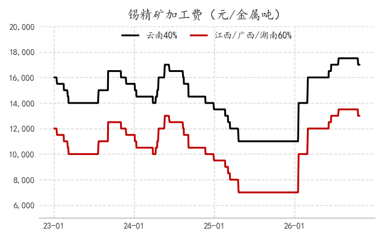
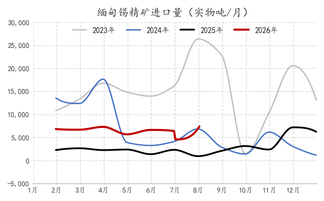
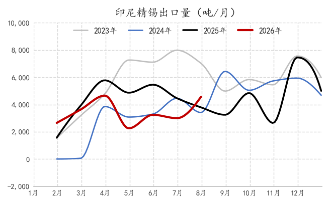
| 国家 | 公司 | 项目 | 开发阶段 | 规模 | 预计投产 |
|---|---|---|---|---|---|
| 刚果(金) | AVA矿产公司 | Manono | 可行性 | 0.14万吨/年 | 2023年底 |
| 刚果 | Alphamin | MpamaSouth | 投产 | 0.72万吨/年 | 已投产 |
| 纳米比亚 | Andrada | Uis | 投产 | 0.15万吨/年 | 已投产 |
| 澳大利亚 | SkyMetals | Tallebung | 探测中 | 含锡量1.84万吨 | 2024年以后 |
| 澳大利亚 | AustralianTinResources | Ardlethan | 含锡量6.65万吨 | 已投产 | |
| 溴大利亚 | First Tin | Taranga | 可行性 | 含锡量13.81万吨 | 2027 年 |
| 澳大利亚 | Stellar Resources | Heemskirk | 探索中 | 含锡量7.8万吨 | 未定（预计 2027 后） |
| 秘鲁 | Tinka Resources | Ayswilca | 探索中 | 0.2万吨/年 | 2026 年后 |
| 德国 | First Tin | Tellehauser | 可行性 | 0.33万吨/年 | 2025年以后 |
| 英国 | Tungsten West | Hemerdon | 可行性 | 0.05万吨/年 | 2026 年底 |
| 刚果（金） | Rome Resources | Kalayi | 首个钻孔进行中 | / | 2028 年后 |
| 中国 | Weilasituo矿业公司 | Weilasituo | 探索中 | 含锡量5.8万吨 | 2025年以后 |
| 英国 | CornishMetals | SouthCrofty | 可行性验证 | 0.39万吨/年 | 2026年以后 |
| 摩洛哥 | Atlantic Tin /兴业银锡 | Achmmach | 试运营 | 含锡量21.3万吨 | 2026年以后 |
| 哈萨克斯坦 | Tin One | Great Pyramid | 初步探索中 | 含锡量1.44万吨 | 2027年以后 |
| 西班牙 | Elementos | OropesaProject | 可行性 | 0.33万吨/年 | 2027年底 |
| 玻利维亚 | Eloro Resources | lska-lska | 初步探索中 | 含锡量13万吨 | 暂未有预计时间（2023年初次公布探测） |
| 中国 | 新金路 | 栗木钽铌锡多金属矿 | 可行性 | 60万吨/年 | 暂未有预计时间 |
| 国家/地区 | 2022 | 2023 | 2024 | 2025 | 2026E | 2027E |
|---|---|---|---|---|---|---|
| 中国 | 7.52 | 7.18 | 7.29 | 7.21 | 7.09 | 7.25 |
| 缅甸 | 3.66 | 3.25 | 2.05 | 1.25 | 1.95 | 2.25 |
| 印尼 | 7.79 | 6.54 | 5.23 | 5.11 | 5.25 | 5.75 |
| 马来西亚 | 0.35 | 0.54 | 0.57 | 0.55 | 0.54 | 0.56 |
| 刚果金 | 1.94 | 1.98 | 2.41 | 2.51 | 2.71 | 2.62 |
| 巴西 | 1.85 | 1.86 | 1.89 | 1.71 | 1.72 | 1.75 |
| 秘鲁 | 2.81 | 2.62 | 2.82 | 2.85 | 2.79 | 2.72 |
| 玻利维亚 | 1.75 | 1.91 | 1.90 | 1.90 | 1.85 | 1.82 |
| 澳大利亚 | 0.85 | 0.93 | 1.02 | 1.15 | 1.21 | 1.26 |
| 俄罗斯 | 0.36 | 0.29 | 0.30 | 0.30 | 0.40 | 0.50 |
| 其他（亚/非/美洲） | 1.84 | 1.85 | 2.22 | 2.55 | 2.68 | 2.90 |
| 全球总和 | 30.72 | 28.95 | 27.70 | 27.09 | 28.19 | 29.38 |
| 全球 YoY | -5.8% | -4.3% | -2.2% | +4.1% | +4.2% |
- 需求最大变量仍是 AI 焊料，但财报验证重点已从资本开支故事转向订单、收入与现金流。若云厂商和存储厂盈利兑现，算力链用锡预期获得支撑；若不及预期，前期估值溢价仍可能回吐。
- 传统终端并非全面走强：10 月焊料开工率小幅回落，本周下游成交降至 1,445 吨；9 月集成电路产量同比仍有增长，而手机、空调等传统产量偏弱，需求结构继续分化。后续重点验证终端订单能否接续并转化为持续排产。
- 库存是四季度近端定价的核心：SMM 社库单周下降 1,081 吨、Mysteel 社库下降 865 吨，SHFE 仓单一周再降 724 吨。去化从社库传导到可交割仓单，近月供应安全垫继续变薄。
- 预计本周显性库存延续去化，低库存带来逼仓风险。需要同时跟踪成交量、终端订单和隐形库存，区分真实终端消耗、贸易环节持货与票据属性造成的可流通货源变化；若订单不能接续，去库持续性仍需下修。
| 指标（千吨） | 2025Q1 | 2025Q2 | 2025Q3 | 2025Q4 | 2026Q1 | 2026Q2 | 2026Q3 | 2026Q4E | 2027Q1E |
|---|---|---|---|---|---|---|---|---|---|
| Mysteel锡锭产量 | 43.55 | 43.62 | 40.18 | 47.00 | 38.74 | 45.34 | 48.28 | 41.80 | 39.71 |
| 净进口量 | 0.12 | -0.39 | -0.33 | -2.92 | 1.55 | -0.03 | 2.25 | -0.60 | 1.20 |
| 理论消费量 | 38.68 | 45.61 | 40.76 | 43.12 | 39.94 | 46.67 | 49.83 | 40.70 | 41.06 |
| 消费同比增速 | +1.7% | +4.4% | -14.2% | -22.8% | +3.3% | +2.3% | +22.2% | -5.6% | +2.8% |
| 平衡 | 4.99 | -2.38 | -0.91 | 0.96 | 0.35 | -1.36 | 0.70 | 0.50 | -0.15 |
- 逻辑：电车除欧洲外出口利润丰厚（欧洲因关税利润偏低）；出口退税退坡后，其他地区出口仍有较好利润，欧洲部分车型出口或陷亏损 → 催生抢出口。
- 量级：参考 2026 年电池出口退税退坡经验（电池年出口约 300GWh，抢出口约 60–70GWh），按同比例对应电车年出口 400–500 万辆，抢出口约 80–90 万辆；按单车带电量 60 度折算约 48–54GWh 电池需求前置，需在 10 月–次年 2 月共 5 个月兑现。
- 用锡折算：按新能源车单车用锡约 1kg 的常用口径估算（假设值，可调整），80–90 万辆对应约 800–900 吨锡需求前置，摊至 5 个月约 160–180 吨/月。
- 对冲：车企已备电池库存约 150GWh（约 1.5 个月，超出正常 1 个月水平 0.5 个月），理论上可覆盖抢出口前置的电池需求；相互抵消后近月平衡表改善不大，反而更利空远月。
- 光伏：10 月组件产量 40.83GW，环比增加 2.5%、同比下降 11.1%；9 月光伏耗锡量 3,942 吨，环比下降 2.6%、同比下降 16.8%。短期排产边际回升尚未扭转同比弱势，远月仍需关注装机与组件盈利对开工的约束。
- 白电：8 月冰箱、洗衣机产量分别为 871.3、792.9 万台，环比增加 4.5%、5.4%；空调产量 1,072 万台，环比下降 18.5%。8 月空调排产进一步降至 1,111 万台，环比下降 20.4%，传统旺季后的淡季特征明确。
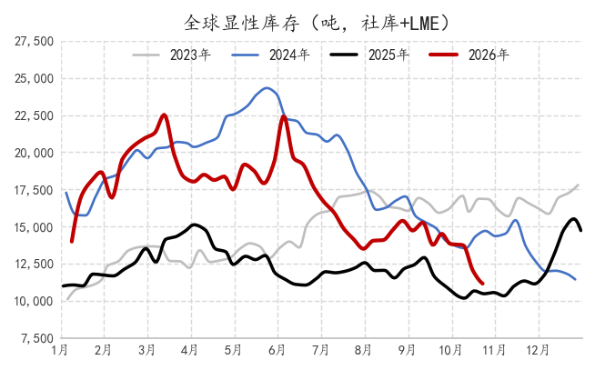
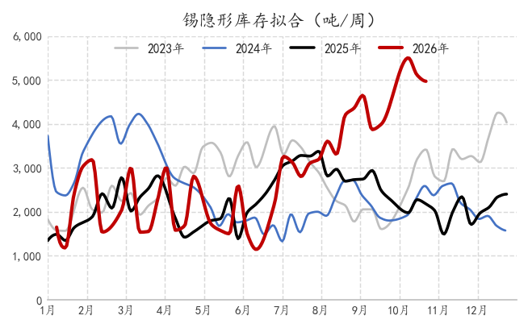
- 近月定价的核心已从单纯矿紧转向可交割货源收紧：社库连续下降、SHFE 仓单降至 2,136 吨、冶炼开工和周产量继续下滑，连一－连二 Back 扩至 2,340 元/吨。预计本周去库延续，正套的风险收益比优于单边。
- 单边仍不能忽视宏观估值压力。中东升级可能同时推高油价、通胀与避险，科技财报则决定 AI 链能否从资本开支叙事转入盈利兑现；两者若形成双利空，锡价下行弹性会被高 beta 属性放大。
- 因此，宏观没有额外利好时，39 万附近作为短期顶部区间和空配参考；但若仓单继续快速下降或出现宏观利好，近月逼仓可能使价格短时突破区间，空单必须保留风控。
本周重点关注WEEKLY FOCUS
市场情绪 × 有色情绪 · 周度观点速览SENTIMENT SNAPSHOT
- 总体基调：宽幅震荡，产业支撑与估值压力并存——本周机构观点更趋一致：冶炼减产、仓单下降和现货偏紧限制回调空间，但风险偏好反复、高价采购不足又限制上涨持续性，暂时尚未形成顺畅单边行情的共识。
- 支撑逻辑：矿端恢复偏慢、冶炼检修及进口亏损共同约束可流通供应，国内仓单与社会库存去化使交割货源更趋敏感。部分观点进一步关注近月结构走强，但普遍认为仍需成交和终端订单验证，而非只凭低库存追涨。
- 谨慎逻辑：锡价处于高位后，下游主动补库意愿有限，“银十”需求兑现仍待观察；美元、利率预期、能源价格和科技股波动持续影响估值。谨慎方强调，供应偏紧可以解释价格韧性，却不能直接等同于终端需求已经转强。
- 现货与资金行为：机构跟踪反馈仍是下跌时刚需补库增加、反弹后采购转谨慎，焊料及镀锡企业订单整体偏平稳。盘面资金对供应扰动和宏观消息更敏感，现货成交则反映高价接受度，期现强弱可能继续分化。
- 后续分歧与验证：多方关注低库存、减产与进口受限能否继续发酵，谨慎方关注高价对订单和补库的抑制。下周重点观察仓单去化是否延续、现货升贴水与成交能否匹配，以及缅甸供应、印尼政策和半导体需求预期是否出现新变化。
- 板块基调：高位震荡、品种分化——最新周度观点并未形成一致方向交易：海外利率与地缘风险压制风险偏好，但矿端约束、国内部分品种去库和新兴产业需求提供支撑。机构更倾向于分别评估各品种的库存和供应矛盾。
- 铜：短期宏观承压，中期供应逻辑未改——海外库存与升水变化、关税不确定性和利率预期使短线情绪偏谨慎；与此同时，铜矿加工费低迷、炼厂检修及矿端扰动仍构成中期支撑。部分周报注意到国内铜铝继续去库、线缆开工改善，需求端的悲观预期有所修正。
- 铝与其他基本金属：铝主要交易国内去库、现货升水与供应恢复之间的博弈，基本面支撑强于单纯宏观叙事；锌、镍等品种则更强调库存压力、供应恢复或减产消息的兑现程度，板块内部不愿简单同涨同跌。
- 贵金属与跨资产：黄金、白银同时受实际利率、美元和避险需求影响，与工业金属并非同一交易逻辑。中东局势和油价仍是风险偏好的重要扰动，科技股财报及 AI 资本开支则影响成长资产情绪和相关金属需求预期。
- 铜锡情绪差：铜更偏全球宏观、关税和矿端定价，锡对仓单、交割货源和小规模供应扰动更敏感。两者都有供应支撑，但锡的现货与近月弹性更高；铜的持续性则更依赖库存下降与实体需求改善能否相互确认。
- 下周事件密集：周二以色列大选；周四凌晨 FOMC，周四欧洲央行发布会；周五欧元区 GDP 初值。利率基准情形为 10 月不加息，但 12 月和次年 1 月仍保留进一步收紧可能，最终利率区间关注 4.25%–4.50%。
- 中东基准情形仍是大选前后先升级、再降级，且可能呈现高烈度、短时间特征。油价处在高位时，升级不仅带来避险，也会强化通胀与滞胀约束，不能简单按“事件落地、风险资产反弹”处理。
- 对锡而言，宏观没有额外利好时，39 万附近仍偏短期顶部；若中东升级与科技财报不及预期叠加，单边下行压力将明显增大。
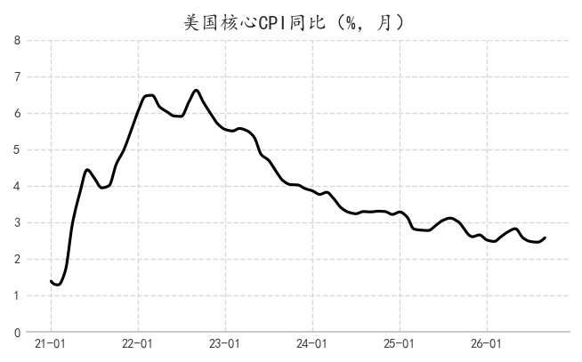
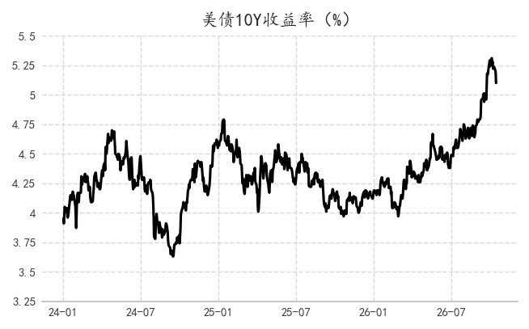
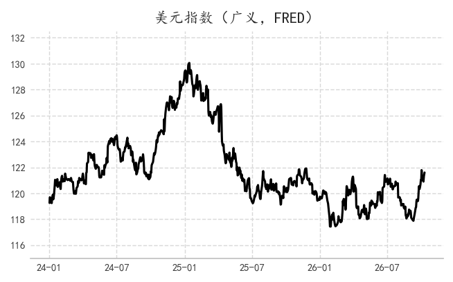
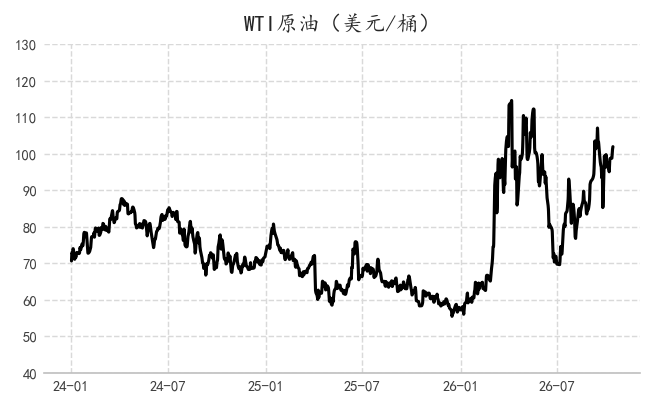
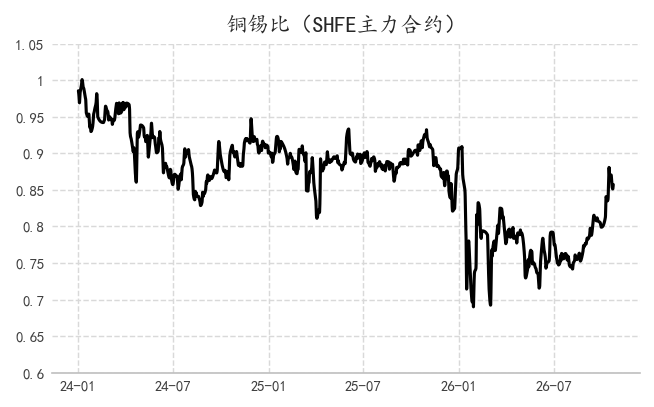
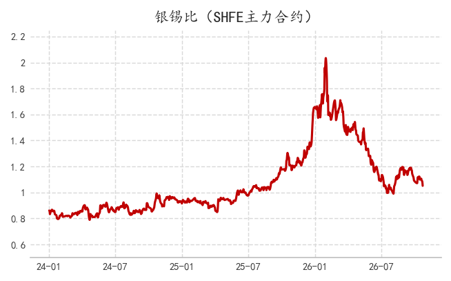
AI：本周高频验证AI & SEMICONDUCTOR
- 韩国半导体出口：2026 年 10 月前 20 日同比 +222.5%，AI 硬件需求仍强；出口金额同时受价格和产品结构影响，仍需与出货量、PCB 投产及焊料订单交叉验证。
- DRAM 现货：DDR3 4Gb 10/23 为 1.357 美元，用于观察存储链价格变化；NAND Flash 数据及月度产业链指标放在详细周报 AI 板块，不在重点关注重复展示。
- LLM Token 价格：SDLLMTK 10/23 为 0.9348 美元/百万 tokens。该指标衡量市场实际支付的推理 token 价格，不直接代表 AI 总支出或锡需求，需与硬件出货和营收指标配合解读。
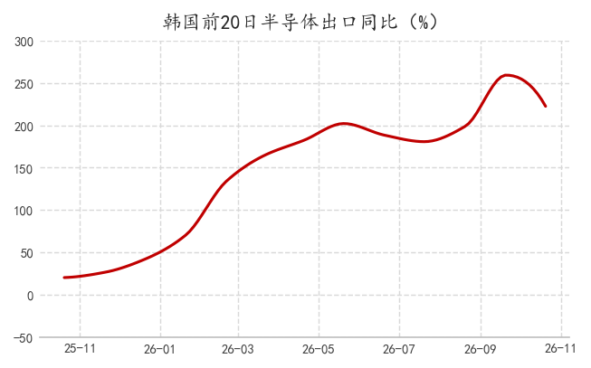
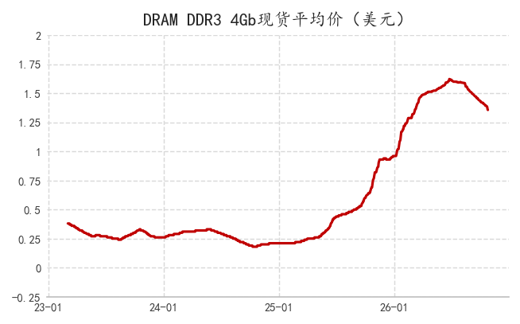
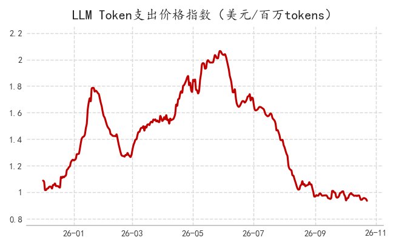
- 全球显性库存 11,148 吨，较上周 12,028 吨减少 880 吨（-7.3%）。
- SMM 社库 6,689 吨，较上周 7,770 吨减少 1,081 吨（-13.9%）；Mysteel 社库 7,103 吨，较上周 7,968 吨减少 865 吨（-10.9%），两口径连续共振去化。
- SHFE 仓单 2,136 吨（10/23），较上周五 2,860 吨减少 724 吨（-25.3%）；仓单下降加快，可交割货源收紧是本周最重要的结构变化。
- LME 库存 4,045 吨（10/23），周中一度升至 4,255 吨后回落；海外库存仍处低位，LME Cash-3M 转为 +60.77 美元/吨。
- 市场反馈，海外 MSC 交仓单约 200 吨，另有海外贸易商搬货约 800 吨的预期。后续重点观察 MSC 是否继续交仓；其部分仓单质量较差，若流到国内，实际更接近废料，不宜简单视为有效精锡供应。
- 隐性库存中有一部分为不带票货源，广东地区约四成库存属此类；目前广东已有 2–3 家持货商暂停出货，可流通货源进一步收紧。预计本周显性库存继续去化，需防范低库存下的近月逼仓。
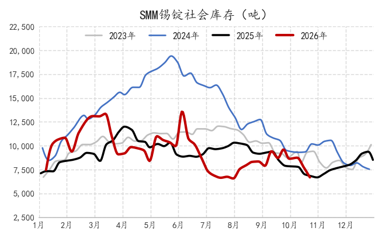
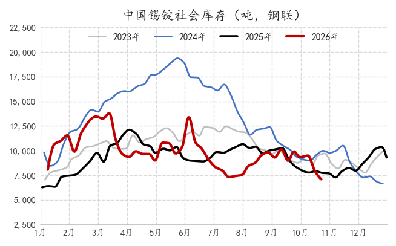
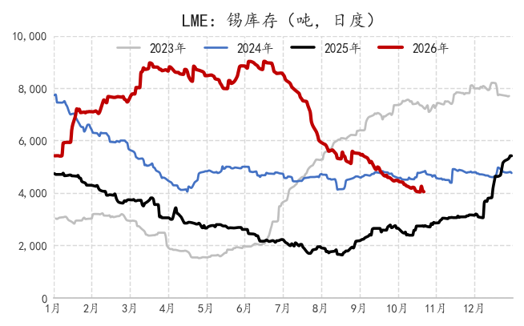
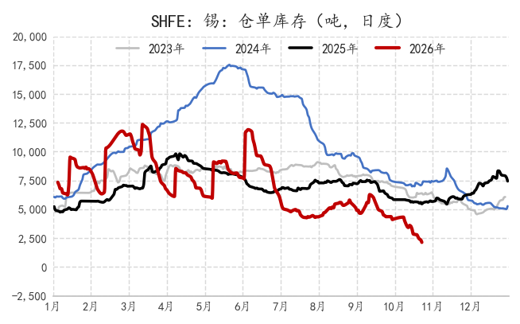
📊 平衡表：矿端 · 精炼锡 · 锡锭 · ITA · WBMS（点击展开；单元格可直接编辑）
| 指标（万吨） | 2020 | 2021 | 2022 | 2023 | 2024 | 2025 | 2026E | 2027E |
|---|---|---|---|---|---|---|---|---|
| 缅甸矿进口（金属量） | 2.39 | 3.07 | 4.59 | 4.51 | 1.99 | 1.08 | 1.75 | 2.01 |
| 其他国家进口（金属量） | 0.65 | 1.86 | 2.83 | 3.42 | 4.16 | 4.60 | 5.48 | 5.69 |
| 国产矿（金属量） | 8.65 | 8.34 | 7.77 | 6.96 | 7.04 | 7.12 | 7.60 | 7.72 |
| 消费量 | 12.37 | 13.18 | 12.76 | 12.91 | 13.72 | 14.24 | 14.64 | 14.94 |
| 平衡值 | -0.67 | 0.26 | 2.44 | 2.04 | -0.47 | -1.43 | 0.18 | 0.48 |
| 月份 | 缅甸矿进口金属量 | 其他国家锡矿进口金属量 | 国产矿金属量 | 平衡值 | 原生锡 | 消费量 | 进口实物量 | 缅甸矿进口量 |
|---|---|---|---|---|---|---|---|---|
| 2025-01 | 1,101 | 3,123 | 5,901 | -2,275 | 12,130 | 12,441 | 9,842 | 2,259 |
| 2025-02 | 1,060 | 2,502 | 5,508 | -2,264 | 11,090 | 11,374 | 8,745 | 2,651 |
| 2025-03 | 1,101 | 2,716 | 6,345 | -1,424 | 11,340 | 11,631 | 8,323 | 2,252 |
| 2025-04 | 1,087 | 3,249 | 6,391 | -1,058 | 11,490 | 11,785 | 9,861 | 2,377 |
| 2025-05 | 689 | 5,829 | 5,961 | 766 | 11,420 | 11,713 | 13,449 | 1,369 |
| 2025-06 | 486 | 4,537 | 6,795 | -274 | 11,790 | 12,092 | 11,911 | 2,315 |
| 2025-07 | 523 | 4,003 | 6,410 | -1,956 | 12,570 | 12,892 | 10,278 | 933 |
| 2025-08 | 456 | 4,070 | 6,309 | -1,493 | 12,020 | 12,328 | 10,267 | 2,092 |
| 2025-09 | 817 | 2,751 | 6,240 | 2,639 | 6,990 | 7,169 | 8,714 | 3,137 |
| 2025-10 | 524 | 4,526 | 5,973 | -2,085 | 12,780 | 13,108 | 11,632 | 2,367 |
| 2025-11 | 1,581 | 3,823 | 4,000 | -3,509 | 12,590 | 12,913 | 15,099 | 7,190 |
| 2025-12 | 1,400 | 4,823 | 5,335 | -1,365 | 12,600 | 12,923 | 17,637 | 6,205 |
| 2026-01 | 1,235 | 4,113 | 7,062 | 328 | 11,780 | 12,082 | 17,801 | 6,824 |
| 2026-02 | 1,008 | 4,026 | 4,708 | -227 | 9,720 | 9,969 | 17,144 | 6,677 |
| 2026-03 | 1,256 | 4,223 | 6,035 | -794 | 12,000 | 12,308 | 18,502 | 7,294 |
| 2026-04 | 1,026 | 4,161 | 6,917 | 83 | 11,720 | 12,021 | 15,720 | 5,678 |
| 2026-05 | 1,194 | 5,214 | 6,211 | 137 | 12,170 | 12,482 | 16,831 | 6,634 |
| 2026-06 | 1,374 | 4,556 | 6,929 | 336 | 12,210 | 12,523 | 17,431 | 6,393 |
| 2026-07 | 986 | 4,408 | 7,386 | 267 | 12,200 | 12,513 | 16,958 | 4,570 |
| 2026-08 | 1,479 | 4,658 | 5,918 | -1,073 | 12,800 | 13,128 | 19,332 | 7,395 |
| 2026-09E | 1,600 | 4,700 | 6,100 | 200 | 12,300 | 12,200 | 20,032 | 8,000 |
| 2026-10E | 1,800 | 4,800 | 6,200 | 600 | 12,500 | 12,200 | 21,288 | 9,000 |
| 2026-11E | 2,100 | 4,900 | 6,250 | 850 | 12,700 | 12,400 | 23,044 | 10,500 |
| 2026-12E | 2,400 | 5,000 | 6,300 | 1,100 | 12,900 | 12,600 | 24,800 | 12,000 |
| 指标 | 2020 | 2021 | 2022 | 2023 | 2024 | 2025 | 2026E | 2027E |
|---|---|---|---|---|---|---|---|---|
| 国内锡矿产量 | 86,510 | 82,411 | 78,138 | 69,606 | 70,436 | 72,500 | 72,000 | 73,080 |
| 国内锡矿进口 | 38,298 | 45,531 | 65,711 | 66,739 | 55,000 | 60,000 | 70,000 | 72,800 |
| 国内锡矿消费 | 124,808 | 127,942 | 143,849 | 136,345 | 125,436 | 132,500 | 140,000 | 143,500 |
| 精炼锡国内产量 | 149,633 | 165,220 | 166,000 | 170,910 | 183,884 | 182,500 | 189,000 | 193,725 |
| 净进口 | 14,117 | 9,398 | 20,383 | 21,246 | 4,486 | -3,597 | 5,500 | 5,000 |
| 国内锡矿平衡 | 2,000 | 2,380 | ||||||
| 国内精炼锡供给量 | 163,279 | 164,116 | 181,291 | 188,799 | 188,998 | 183,903 | 194,500 | 198,725 |
| yoy | +18.0% | +0.5% | +10.5% | +4.1% | +0.1% | -2.7% | +5.8% | +2.2% |
| 国内精炼锡消费量 | 150,733 | 188,046 | 182,137 | 189,607 | 191,049 | 192,735 | 191,894 | 197,267 |
| yoy | +4.6% | +24.8% | -3.1% | +4.1% | +0.8% | +0.9% | +1.1% | +2.8% |
| 集成电路 | 26,126,000 | 35,943,000 | 32,419,000 | 35,143,599 | 45,142,297 | 48,427,948 | 51,952,744 | 62,343,293 |
| yoy | ||||||||
| 耗锡量（吨） | 84,910 | 107,829 | 97,257 | 96,645 | 97,056 | 99,277 | 104,241 | 125,089 |
| 手机（万台） | 147,193 | 166,152 | 156,080 | 156,642 | 169,174 | 169,000 | 160,000 | 163,040 |
| 耗锡量（吨） | 6,064 | 6,845 | 6,430 | 6,454 | 6,970 | 6,963 | 6,592 | 6,717 |
| 电脑（万台） | 40,509 | 48,546 | 45,315 | 34,552 | 35,243 | 35,595 | 35,000 | 33,600 |
| 耗锡量（吨） | 5,428 | 6,505 | 6,072 | 4,630 | 4,723 | 4,770 | 4,690 | 4,502 |
| 白色家电（万台） | 57,747 | 57,943 | 59,596 | 63,917 | 69,476 | 70,171 | 72,000 | 72,360 |
| 耗锡量（吨） | 11,549 | 11,589 | 11,919 | 12,783 | 13,895 | 14,034 | 14,400 | 14,472 |
| 传统汽车（万台） | 2,317 | 2,285 | 2,026 | 2,067 | 2,128 | 2,341 | 2,200 | 2,090 |
| 耗锡量（吨） | 4,634 | 4,570 | 4,051 | 4,133 | 4,257 | 4,683 | 4,400 | 4,180 |
| 新能源汽车（万台） | 146 | 368 | 722 | 944 | 1,133 | 1,530 | 1,600 | 1,760 |
| 耗锡量（吨） | 874 | 2,206 | 4,331 | 5,666 | 6,799 | 9,179 | 9,600 | 10,560 |
| 其他焊料（吨） | 56,360 | 76,113 | 64,452 | 62,979 | 60,412 | 59,649 | 65,000 | 69,182 |
| 光伏 | 157 | 234 | 344 | 510 | 570 | 530 | 423 | 423 |
| 耗锡量（吨） | 8,651 | 12,873 | 18,900 | 28,050 | 30,210 | 28,090 | 22,419 | 22,419 |
| 锡焊料消费（吨） | 93,560 | 120,702 | 116,157 | 124,695 | 127,266 | 127,367 | 126,660 | 132,033 |
| 马口铁（万吨） | 508 | 499 | 485 | 473 | 475 | 450 | 450 | 450 |
| 耗锡量（吨） | 17,302 | 22,931 | 20,126 | 18,913 | 19,000 | 18,000 | 18,000 | 18,000 |
| PVC稳定剂（吨） | 20,730,000 | 22,194,000 | 21,970,300 | 22,830,000 | 23,286,600 | 23,519,466 | 23,754,661 | 23,754,661 |
| 耗锡量（吨） | 18,740 | 20,063 | 19,861 | 20,638 | 21,051 | 21,262 | 21,000 | 21,000 |
| 化学农药（万吨） | 189 | 212 | 250 | 267 | 240 | 250 | 251 | 251 |
| 耗锡量（吨） | 1,277 | 1,436 | 1,688 | 1,806 | 1,622 | 1,690 | 1,700 | 1,700 |
| 铅酸电池 | 155 | 200 | 212 | 228 | 228 | 220 | 220 | 220 |
| 耗锡量（吨） | 14,140 | 17,170 | 17,960 | 19,309 | 19,310 | 18,500 | 18,500 | 18,500 |
| 锡铜合金消费 | 5,714 | 5,744 | 6,345 | 6,246 | 5,800 | 5,916 | 6,034 | 6,034 |
| 国内消费 | 150,733 | 188,046 | 182,137 | 191,607 | 194,049 | 192,735 | 191,894 | 197,267 |
| 国内精炼锡平衡 | 13,017 | -13,428 | 4,246 | 5,490 | -14,651 | -13,832 | 2,606 | 1,458 |
| 月份 | 精炼锡产量 | 产量同比 | 原生锡 | 原生同比 | 再生锡 | 再生同比 | 进口 | 进口同比 | 终端消费 | 消费同比 | 出口 | 出口同比 | 供需平衡 | 社库 | 社库变化 | 厂库 | 厂库变化 |
|---|---|---|---|---|---|---|---|---|---|---|---|---|---|---|---|---|---|
| 1月 | 15,775 | -3.13% | 11,780 | -2.89% | 3,320 | -6.74% | 1,101 | -52.83% | 16,801 | +4.88% | 1,603 | -24.78% | -1,528 | 11,556 | 2,247 | 3,210 | -740 |
| 2月 | 11,959 | -17.85% | 9,720 | -12.35% | 1,770 | -40.20% | 2,168 | +16.00% | 11,672 | -14.60% | 1,216 | -48.76% | 1,239 | 13,456 | 1,900 | 3,080 | -130 |
| 3月 | 15,610 | -1.37% | 12,000 | +5.82% | 2,950 | -25.13% | 3,287 | +56.45% | 16,410 | +11.77% | 2,191 | +30.96% | 295 | 9,656 | -3,800 | 2,880 | -200 |
| 4月 | 15,330 | -3.29% | 11,720 | +2.00% | 2,950 | -20.49% | 2,802 | +148.40% | 16,417 | -6.27% | 2,109 | +28.83% | -395 | 9,005 | -651 | 2,690 | -190 |
| 5月 | 15,791 | +1.95% | 12,170 | +6.57% | 3,000 | -12.28% | 1,838 | -11.46% | 15,441 | -11.62% | 2,203 | +24.46% | -15 | 10,380 | 1,375 | 4,710 | 2,020 |
| 6月 | 15,809 | +10.00% | 12,200 | +3.48% | 3,000 | +48.51% | 1,228 | -31.24% | 15,161 | +0.29% | 1,589 | -19.46% | 287 | 8,301 | -2,079 | 4,310 | -400 |
| 7月 | 16,329 | -1.24% | 12,500 | -0.56% | 3,200 | -5.04% | 2,269 | +4.71% | 15,642 | -2.11% | 1,745 | +4.30% | 1,211 | 7,531 | -770 | 5,040 | 730 |
| 8月 | 16,267 | +1.38% | 12,600 | +4.83% | 2,950 | -12.46% | 2,747 | +111.96% | 15,828 | +1.18% | 2,202 | +34.27% | 984 | 9,836 | 2,305 | 5,650 | 610 |
| 9月E | 16,693 | -2.50% | 8,900 | -1.30% | 3,300 | -6.30% | 3,989 | +214.34% | 16,170 | -0.90% | 1,319 | -24.54% | 523 | 9,000 | -836 | 6,650 | 1,000 |
| 10月E | 15,000 | +1.50% | 12,800 | +0.20% | 3,500 | +5.70% | 2,800 | +432.32% | 16,341 | -0.90% | 1,800 | +21.62% | -1,341 | 8,500 | -500 | ||
| 11月E | 16,591 | +0.30% | 12,600 | +0.10% | 3,300 | -2.10% | 2,000 | +67.36% | 15,886 | +11.10% | 1,800 | -7.60% | 705 | 9,000 | 500 | ||
| 12月E | 16,521 | -0.10% | 12,500 | -0.80% | 3,400 | +1.50% | 2,200 | +42.12% | 15,439 | -3.30% | 1,750 | -36.66% | 1,081 | 9,500 | 500 |
| 期间 | 产量 | 原生锡 | 再生锡 | 进口 | 出口 | 表观消费 | 供需平衡 | 社库(期末) | 社库变化 | 厂库(期末) | 厂库变化 | 隐性库存(月末) |
|---|---|---|---|---|---|---|---|---|---|---|---|---|
| 2023年 | 168,938 | 123,173 | 45,765 | 33,471 | 12,099 | 186,508 | 3,802 | 10,121 | 3,357 | 3,880 | 445 | 4,031 |
| 2024年 | 183,884 | 138,415 | 45,469 | 21,615 | 17,222 | 189,942 | -1,665 | 7,543 | -3,805 | 6,020 | 2,140 | 1,570 |
| 2025年 | 178,710 | 134,158 | 44,552 | 19,295 | 22,809 | 176,289 | -1,093 | 8,520 | 977 | 3,950 | -2,070 | 2,398 |
| 2026年1–8月（已实现） | 117,990 | 93,030 | 24,960 | 17,440 | 14,858 | 119,041 | 1,531 | 8,351 | -169 | 5,650 | 1,700 | 4,967 |
| 2025-01 | 15,690 | 11,018 | 4,672 | 2,334 | 2,131 | 14,867 | 1,026 | 8,269 | 726 | 6,320 | 300 | 1,638 |
| 2025-02 | 14,050 | 9,530 | 4,520 | 1,869 | 2,373 | 14,162 | -616 | 9,153 | 884 | 4,820 | -1,500 | 2,777 |
| 2025-03 | 15,280 | 10,870 | 4,410 | 2,101 | 1,673 | 13,149 | 2,559 | 11,482 | 2,329 | 5,050 | 230 | 2,817 |
| 2025-04 | 15,200 | 10,990 | 4,210 | 1,128 | 1,637 | 16,690 | -1,999 | 9,833 | -1,649 | 4,700 | -350 | 1,539 |
| 2025-05 | 14,840 | 11,080 | 3,760 | 2,076 | 1,770 | 15,757 | -611 | 9,072 | -761 | 4,850 | 150 | 1,383 |
| 2025-06 | 13,810 | 10,250 | 3,560 | 1,786 | 1,973 | 13,999 | -376 | 9,096 | 24 | 4,450 | -400 | 2,715 |
| 2025-07 | 15,940 | 12,980 | 2,960 | 2,167 | 1,673 | 14,705 | 1,729 | 10,325 | 1,229 | 4,950 | 500 | 3,375 |
| 2025-08 | 15,390 | 11,450 | 3,940 | 1,296 | 1,640 | 17,110 | -2,064 | 9,161 | -1,164 | 4,050 | -900 | 2,729 |
| 2025-09 | 10,510 | 6,800 | 3,710 | 1,269 | 1,748 | 11,102 | -1,071 | 7,890 | -1,271 | 4,250 | 200 | 2,275 |
| 2025-10 | 16,090 | 12,670 | 3,420 | 526 | 1,480 | 15,842 | -706 | 6,684 | -1,206 | 4,750 | 500 | 2,024 |
| 2025-11 | 15,960 | 13,940 | 2,020 | 1,195 | 1,948 | 13,466 | 1,741 | 7,825 | 1,141 | 5,350 | 600 | 1,707 |
| 2025-12 | 15,950 | 12,580 | 3,370 | 1,548 | 2,763 | 15,440 | -705 | 8,520 | 695 | 3,950 | -1,400 | 2,398 |
| 2026-01 | 15,100 | 11,730 | 3,370 | 1,101 | 1,603 | 13,015 | 1,583 | 10,843 | 2,323 | 3,210 | -740 | 3,032 |
| 2026-02 | 11,490 | 7,970 | 3,520 | 2,168 | 1,216 | 10,306 | 2,136 | 13,109 | 2,266 | 3,080 | -130 | 2,038 |
| 2026-03 | 14,950 | 11,640 | 3,310 | 3,287 | 2,191 | 20,253 | -4,207 | 9,102 | -4,007 | 2,880 | -200 | 2,252 |
| 2026-04 | 14,670 | 11,300 | 3,370 | 2,802 | 2,109 | 16,250 | -887 | 8,405 | -697 | 2,690 | -190 | 2,805 |
| 2026-05 | 15,170 | 11,820 | 3,350 | 1,838 | 2,203 | 11,238 | 3,567 | 9,952 | 1,547 | 4,710 | 2,020 | 2,594 |
| 2026-06 | 15,430 | 12,110 | 3,320 | 1,228 | 1,589 | 16,748 | -1,679 | 8,673 | -1,279 | 4,310 | -400 | 2,177 |
| 2026-07 | 15,290 | 13,520 | 1,770 | 2,269 | 1,745 | 17,187 | -1,373 | 6,570 | -2,103 | 5,040 | 730 | 3,190 |
| 2026-08 | 15,890 | 12,940 | 2,950 | 2,747 | 2,202 | 14,044 | 2,391 | 8,351 | 1,781 | 5,650 | 610 | 4,357 |
| 日期 | 精炼锡产量 | 精炼锡进口 | 精炼锡出口 | 库存 | 库存变化 | 理论消费量 | 月度消费同比增速 | 季度同比增速 | 年度同比增速 |
|---|---|---|---|---|---|---|---|---|---|
| 2019-01 | 13,738 | 119 | -1,198 | 7,441 | -458 | 13,117 | |||
| 2019-02 | 10,275 | 59 | -456 | 7,814 | 373 | 9,505 | |||
| 2019-03 | 13,332 | 189 | -1,307 | 7,415 | -399 | 12,613 | |||
| 2019-04 | 14,976 | 136 | -1,169 | 7,057 | -358 | 14,300 | |||
| 2019-05 | 14,679 | 197 | -457 | 7,628 | 571 | 13,848 | |||
| 2019-06 | 13,918 | 288 | -384 | 7,800 | 172 | 13,650 | |||
| 2019-07 | 12,566 | 175 | -216 | 5,947 | -1,853 | 14,379 | |||
| 2019-08 | 12,747 | 97 | -197 | 4,550 | -1,397 | 14,044 | |||
| 2019-09 | 12,414 | 314 | -134 | 3,918 | -632 | 13,226 | |||
| 2019-10 | 9,972 | 170 | -209 | 3,214 | -704 | 10,637 | |||
| 2019-11 | 7,520 | 363 | -159 | 2,966 | -248 | 7,972 | |||
| 2019-12 | 9,973 | 899 | -214 | 5,571 | 2,605 | 8,052 | |||
| 2020-01 | 11,222 | 830 | -260 | 8,237 | 2,666 | 9,126 | -30.4% | ||
| 2020-02 | 7,706 | 830 | -260 | 9,810 | 1,573 | 6,703 | -29.5% | ||
| 2020-03 | 12,340 | 1,180 | -459 | 6,519 | -3,291 | 16,352 | +29.6% | -8.7% | |
| 2020-04 | 11,350 | 1,183 | -453 | 6,276 | -243 | 12,323 | -13.8% | ||
| 2020-05 | 11,860 | 3,674 | -503 | 6,831 | 555 | 14,476 | +4.5% | ||
| 2020-06 | 11,320 | 1,666 | -200 | 5,683 | -1,148 | 13,934 | +2.1% | -2.5% | |
| 2020-07 | 10,790 | 2,750 | -353 | 6,608 | 925 | 12,263 | -14.7% | ||
| 2020-08 | 13,010 | 348 | -673 | 6,125 | -483 | 13,168 | -6.2% | ||
| 2020-09 | 13,520 | 949 | -316 | 5,226 | -899 | 15,052 | +13.8% | -2.8% | |
| 2020-10 | 13,420 | 1,044 | -216 | 6,323 | 1,097 | 13,151 | +23.6% | ||
| 2020-11 | 12,950 | 1,798 | -395 | 7,502 | 1,179 | 13,174 | +65.3% | ||
| 2020-12 | 14,510 | 1,467 | -390 | 7,159 | -343 | 15,930 | +97.8% | +58.5% | +7.1% |
| 2021-01 | 13,830 | 1,528 | -481 | 7,034 | -125 | 15,002 | +64.4% | ||
| 2021-02 | 11,820 | 459 | -731 | 10,372 | 3,338 | 8,209 | +22.5% | ||
| 2021-03 | 14,200 | 102 | -939 | 10,105 | -267 | 13,630 | -16.6% | +14.5% | |
| 2021-04 | 14,930 | 257 | -1,466 | 11,464 | 1,359 | 12,362 | +0.3% | ||
| 2021-05 | 14,780 | 121 | -3,045 | 7,531 | -3,933 | 15,789 | +9.1% | ||
| 2021-06 | 15,990 | 158 | -1,792 | 4,260 | -3,271 | 17,626 | +26.5% | +12.4% | |
| 2021-07 | 11,453 | 135 | -2,276 | 4,162 | -98 | 9,410 | -23.3% | ||
| 2021-08 | 13,770 | 44 | -788 | 2,239 | -1,923 | 14,948 | +13.5% | ||
| 2021-09 | 14,381 | 47 | -1,107 | 1,749 | -490 | 13,811 | -8.2% | -5.7% | |
| 2021-10 | 15,095 | 721 | -562 | 2,350 | 601 | 14,652 | +11.4% | ||
| 2021-11 | 14,315 | 1,016 | -695 | 2,988 | 638 | 13,999 | +6.3% | ||
| 2021-12 | 14,898 | 306 | -438 | 2,359 | -629 | 15,395 | -3.4% | +4.2% | +5.9% |
| 2022-01 | 13,966 | 648 | -715 | 3,369 | 1,010 | 12,889 | -14.1% | ||
| 2022-02 | 12,650 | 125 | -532 | 3,926 | 557 | 11,686 | +42.4% | ||
| 2022-03 | 13,812 | 1,946 | -1,224 | 2,669 | -1,257 | 15,791 | +15.9% | +9.6% | |
| 2022-04 | 14,799 | 3,280 | -610 | 2,325 | -344 | 17,813 | +44.1% | ||
| 2022-05 | 15,498 | 5,521 | -728 | 2,776 | 451 | 19,840 | +25.7% | ||
| 2022-06 | 11,532 | 2,757 | -744 | 5,093 | 2,317 | 11,228 | -36.3% | +6.8% | |
| 2022-07 | 4,828 | 1,430 | -893 | 4,762 | -331 | 5,696 | -39.5% | ||
| 2022-08 | 14,682 | 490 | -1,232 | 3,234 | -1,528 | 15,469 | +3.5% | ||
| 2022-09 | 15,650 | 2,882 | -1,171 | 2,521 | -713 | 18,074 | +30.9% | +2.8% | |
| 2022-10 | 16,825 | 3,512 | -763 | 3,726 | 1,205 | 18,369 | +25.4% | ||
| 2022-11 | 15,806 | 5,174 | -1,005 | 5,440 | 1,714 | 18,261 | +30.4% | ||
| 2022-12 | 15,608 | 3,349 | -1,115 | 7,117 | 1,677 | 16,165 | +5.0% | +19.9% | +10.0% |
| 2023-01 | 12,325 | 1,022 | -1,093 | 8,356 | 1,239 | 11,015 | -14.5% | ||
| 2023-02 | 13,656 | 1,559 | -1,088 | 10,449 | 2,093 | 12,034 | +3.0% | ||
| 2023-03 | 14,551 | 1,884 | -1,094 | 10,212 | -237 | 15,578 | -1.3% | -4.3% | |
| 2023-04 | 14,435 | 2,013 | -1,012 | 11,364 | 1,152 | 14,284 | -19.8% | ||
| 2023-05 | 14,366 | 3,687 | -1,182 | 11,580 | 216 | 16,655 | -16.1% | ||
| 2023-06 | 13,218 | 2,227 | -1,141 | 12,300 | 720 | 13,584 | +21.0% | -8.9% | |
| 2023-07 | 10,175 | 2,173 | -1,008 | 11,919 | -381 | 11,721 | +105.8% | ||
| 2023-08 | 10,245 | 2,360 | -831 | 9,654 | -2,265 | 14,039 | -9.2% | ||
| 2023-09 | 14,995 | 2,924 | -726 | 8,768 | -886 | 18,079 | +0.0% | +11.7% | |
| 2023-10 | 15,396 | 3,322 | -1,054 | 9,718 | 950 | 16,714 | -9.0% | ||
| 2023-11 | 14,853 | 5,346 | -1,023 | 8,213 | -1,505 | 20,681 | +13.3% | ||
| 2023-12 | 15,671 | 4,954 | -847 | 10,094 | 1,881 | 17,897 | +10.7% | +4.7% | +0.6% |
| 2024-01 | 15,233 | 4,000 | -1,232 | 11,893 | 1,799 | 16,202 | +47.1% | ||
| 2024-02 | 10,885 | 1,040 | -776 | 13,950 | 2,057 | 9,093 | -24.4% | ||
| 2024-03 | 15,481 | 852 | -1,491 | 16,043 | 2,093 | 12,749 | -18.2% | -1.5% | |
| 2024-04 | 15,878 | 734 | -1,922 | 17,692 | 1,649 | 13,041 | -8.7% | ||
| 2024-05 | 16,005 | 637 | -1,500 | 18,918 | 1,226 | 13,916 | -16.4% | ||
| 2024-06 | 15,427 | 189 | -1,383 | 16,429 | -2,489 | 16,722 | +23.1% | -1.9% | |
| 2024-07 | 15,108 | 840 | -1,738 | 14,012 | -2,417 | 16,627 | +41.9% | ||
| 2024-08 | 14,555 | 1,795 | -1,099 | 12,394 | -1,618 | 16,870 | +20.2% | ||
| 2024-09 | 10,000 | 1,967 | -989 | 9,363 | -3,031 | 14,009 | -22.5% | +8.4% | |
| 2024-10 | 16,216 | 3,051 | -1,551 | 9,781 | 418 | 17,298 | +3.5% | ||
| 2024-11 | 16,479 | 3,519 | -1,457 | 7,846 | -1,935 | 20,476 | -1.0% | ||
| 2024-12 | 16,007 | 2,991 | -2,084 | 6,655 | -1,191 | 18,104 | +1.2% | +1.1% | +1.5% |
| 2025-01 | 14,787 | 2,334 | -2,131 | 7,352 | 697 | 14,292 | -11.8% | ||
| 2025-02 | 14,176 | 1,869 | -2,373 | 9,778 | 2,426 | 11,246 | +23.7% | ||
| 2025-03 | 14,590 | 2,094 | -1,673 | 11,647 | 1,869 | 13,142 | +3.1% | +1.7% | |
| 2025-04 | 14,712 | 1,128 | -1,637 | 9,782 | -1,865 | 16,068 | +23.2% | ||
| 2025-05 | 14,670 | 2,076 | -1,770 | 9,255 | -527 | 15,504 | +11.4% | ||
| 2025-06 | 14,240 | 1,786 | -1,973 | 9,266 | 11 | 14,041 | -16.0% | +4.4% | |
| 2025-07 | 15,448 | 2,167 | -1,673 | 10,389 | 1,123 | 14,819 | -10.9% | ||
| 2025-08 | 14,960 | 1,296 | -1,640 | 10,002 | -387 | 15,004 | -11.1% | ||
| 2025-09 | 9,770 | 1,269 | -1,749 | 8,352 | -1,650 | 10,941 | -21.9% | -14.2% | |
| 2025-10 | 15,618 | 526 | -1,480 | 7,698 | -654 | 15,318 | -11.4% | ||
| 2025-11 | 15,490 | 1,195 | -1,946 | 7,970 | 272 | 14,467 | -29.3% | ||
| 2025-12 | 15,895 | 1,547 | -2,763 | 9,309 | 1,339 | 13,340 | -26.3% | -22.8% | -9.1% |
| 2026-01 | 14,382 | 1,101 | -1,603 | 11,556 | 2,247 | 11,633 | -18.6% | ||
| 2026-02 | 10,613 | 2,168 | -1,216 | 13,456 | 1,900 | 9,665 | -14.1% | ||
| 2026-03 | 13,745 | 3,287 | -2,191 | 9,656 | -3,800 | 18,641 | +41.8% | +3.3% | |
| 2026-04 | 14,480 | 2,802 | -2,109 | 9,005 | -651 | 15,824 | -1.5% | ||
| 2026-05 | 15,162 | 1,838 | -2,203 | 10,380 | 1,375 | 13,422 | -13.4% | ||
| 2026-06 | 15,702 | 1,228 | -1,589 | 8,301 | -2,079 | 17,420 | +24.1% | +2.3% | |
| 2026-07 | 16,152 | 2,269 | -1,745 | 7,531 | -770 | 17,446 | +17.7% | ||
| 2026-08 | 15,888 | 2,747 | -2,202 | 9,836 | 2,305 | 14,128 | -5.8% | ||
| 2026-09 | 16,241 | 2,500 | -1,319 | 9,000 | -836 | 18,258 | +66.9% | +22.2% | |
| 2026-10E | 9,500 | 1,800 | -1,800 | 8,500 | -500 | 10,000 | -34.7% | ||
| 2026-11E | 16,000 | 1,500 | -1,800 | 9,000 | 500 | 15,200 | +5.1% | ||
| 2026-12E | 16,300 | 1,200 | -1,500 | 500 | 15,500 |
| 指标（千吨） | 2025Q1 | 2025Q2 | 2025Q3 | 2025Q4 | 2026Q1 | 2026Q2 | 2026Q3 | 2026Q4E | 2027Q1E |
|---|---|---|---|---|---|---|---|---|---|
| Mysteel锡锭产量 | 43.55 | 43.62 | 40.18 | 47.00 | 38.74 | 45.34 | 48.28 | 41.80 | 39.71 |
| 净进口量 | 0.12 | -0.39 | -0.33 | -2.92 | 1.55 | -0.03 | 2.25 | -0.60 | 1.20 |
| 理论消费量 | 38.68 | 45.61 | 40.76 | 43.12 | 39.94 | 46.67 | 49.83 | 40.70 | 41.06 |
| 消费同比增速 | +1.7% | +4.4% | -14.2% | -22.8% | +3.3% | +2.3% | +22.2% | -5.6% | +2.8% |
| 平衡 | 4.99 | -2.38 | -0.91 | 0.96 | 0.35 | -1.36 | 0.70 | 0.50 | -0.15 |
| 指标（万吨） | 2020 | 2021 | 2022 | 2023 | 2024 | 2025 | 2026E | 2027E |
|---|---|---|---|---|---|---|---|---|
| Mysteel锡锭产量 | 14.40 | 16.95 | 16.57 | 16.39 | 17.73 | 17.44 | 17.42 | 17.85 |
| 净进口量 | 1.32 | -0.94 | 2.04 | 2.14 | 0.44 | -0.35 | 0.32 | 0.50 |
| 理论消费量 | 15.57 | 16.48 | 18.13 | 18.23 | 18.51 | 16.82 | 17.71 | 18.21 |
| 消费同比增速 | +7.1% | +5.9% | +10.0% | +0.6% | +1.5% | -9.1% | +5.3% | +2.8% |
| 平衡 | 0.16 | -0.48 | 0.48 | 0.30 | -0.34 | 0.27 | 0.02 | 0.14 |
| （千吨） | 2024年2季度 | 2024年3季度 | 2024年4季度 | 2025年1季度 | 2025年2季度 | 2025年3季度 | 2025年4季度 | 2026年1季度 | 2026年2季度 | 同比变化 |
|---|---|---|---|---|---|---|---|---|---|---|
| 中国产量 | 50.6 | 43.5 | 53.1 | 47.7 | 49.1 | 43.7 | 48.6 | 43.6 | 47.9 | -2.4% |
| 世界其它地区（不含中国） | 41.1 | 49.3 | 51.0 | 43.5 | 45.4 | 46.4 | 46.9 | 46.1 | 37.3 | -17.9% |
| 全球产量 | 91.7 | 92.8 | 104.1 | 91.2 | 94.5 | 90.1 | 95.5 | 89.7 | 85.2 | -9.9% |
| 美国国防储备局（DLA）抛售 | 0.2 | 0.0 | 0.1 | 0.0 | 0.0 | 0.0 | 0.6 | 0.0 | 0.0 | |
| 中国消费量 | 48.4 | 50.9 | 54.1 | 48.6 | 51.8 | 48.7 | 50.7 | 47.0 | 49.1 | -5.2% |
| 世界其它地区（不含中国） | 43.9 | 43.4 | 45.4 | 46.4 | 47.4 | 44.1 | 43.0 | 41.0 | 42.8 | -9.6% |
| 全球消费量 | 92.3 | 94.3 | 99.5 | 95.0 | 99.2 | 92.8 | 93.7 | 88.0 | 91.9 | -7.3% |
| 中国平衡 | 2.2 | -7.4 | -1.0 | -0.9 | -2.7 | -5.0 | -2.1 | -3.4 | -1.2 | -55.7% |
| 世界其它地区（不含中国） | -2.8 | 6.0 | 5.6 | -2.8 | -2.0 | 2.2 | 3.9 | 5.1 | -5.6 | +180.1% |
| 全球平衡 | -0.4 | -1.4 | 4.7 | -3.8 | -4.7 | -2.7 | 2.5 | 1.7 | -6.8 | +44.3% |
| 月份 | 当月平衡 | 全球产量 | 全球消费 | 全球锡矿产量 |
|---|---|---|---|---|
| 2025-03 | 0.07 | 3.11 | 3.04 | 2.68 |
| 2025-04 | -0.06 | 2.98 | 3.04 | 2.76 |
| 2025-05 | -0.48 | 3.06 | 3.54 | 2.83 |
| 2025-06 | -0.34 | 3.00 | 3.34 | 2.57 |
| 2025-07 | -0.18 | 2.56 | 2.74 | 2.07 |
| 2025-08 | -0.49 | 2.35 | 2.84 | 2.09 |
| 2025-09 | 0.49 | 3.25 | 2.76 | 2.72 |
| 2025-10 | -0.34 | 3.13 | 3.47 | 2.59 |
| 2025-11 | -0.72 | 2.80 | 3.52 | 2.54 |
| 2025-12 | -0.29 | 3.18 | 3.47 | 2.80 |
| 2026-01 | -0.22 | 3.50 | 3.72 | 2.46 |
| 2026-02 | -0.27 | 3.13 | 3.40 | 2.70 |
| 2026-03 | 0.11 | 3.27 | 3.16 | 2.60 |
| 2026-04 | -0.38 | 2.74 | 3.12 | 2.66 |
| 2026-05 | -0.54 | 2.96 | 3.50 | 2.83 |
| 2026-06 | -0.36 | 2.86 | 3.22 | 2.59 |
| 2026-07 | -0.02 | 2.74 | 2.76 | 2.00 |
| 2026-08 | -0.20 | 2.55 | 2.75 | 2.03 |
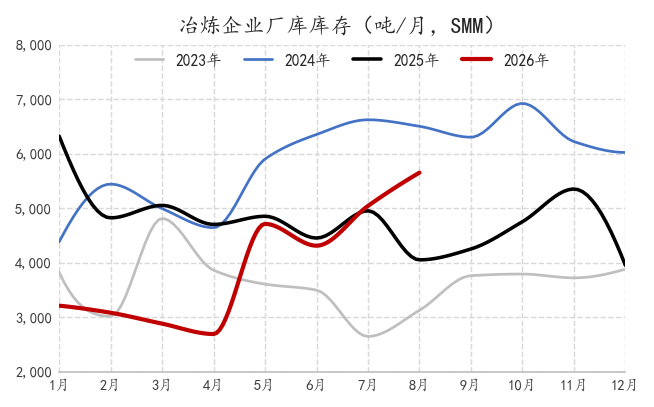
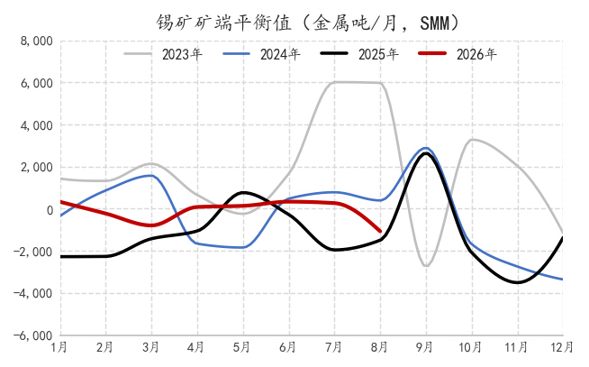
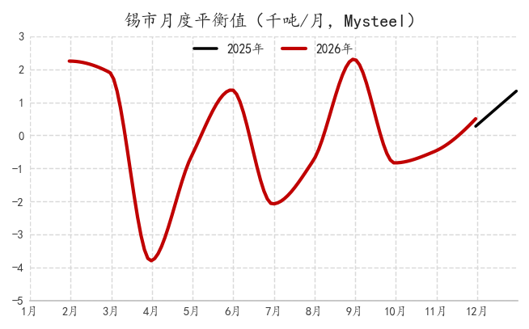
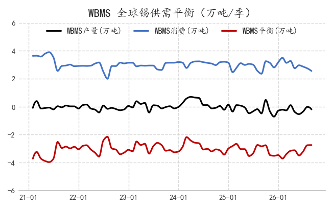
供给SUPPLY
- 锡精矿加工费云南 17,000、江西 13,000 元/金属吨：上周均名义下调 500 元/吨，本周均维稳。
- 锡冶炼损耗约占锡价 2.5–3%（含烟化炉回收等综合回收后约 2.5%）。锡价自 41 万回落至 37 万，对应损耗成本减负约 1,000–1,500 元/吨，而 TC 仅下调 500 元/吨，意味着冶炼端实际加工收益不降反升，等价于加工费变相上调约 1,000 元/吨。剔除价格折旧后，矿端并未收紧，上周 TC 下调更接近随锡价联动的中性调整。
- 本周 TC 维稳，矿端当前仍偏宽松。上游惜售主要影响现货流通节奏；炼厂减产意愿和低开工使锭端供应边际收紧。
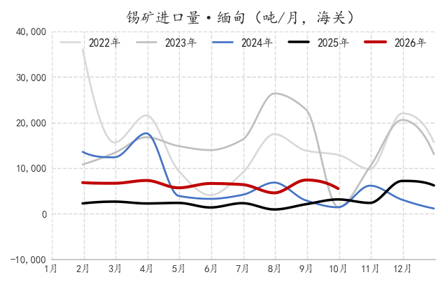
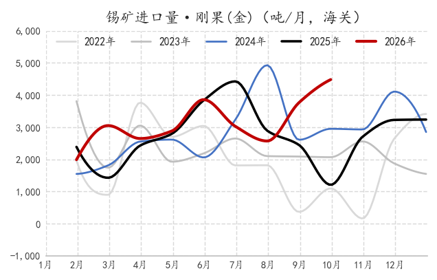
- SMM 精炼锡开工率（10/23 周）：两省合计 27.11%（-2.25pct），云南 25.56 / 江西 29.47，较前一周全面下降。
- 两省周产量 1,440 吨，较前一周 1,560 吨减少 120 吨；市场反馈近期部分炼厂有减产意愿，若后续落地，锭端供应将进一步收紧。
- 10/23 云南 40% 冶炼成本 372,296 元/吨、毛利 -296 元/吨，仍处小幅亏损。后续以实际开工、周产量和厂库验证减产幅度，不将减产意愿直接当作已发生减产量。
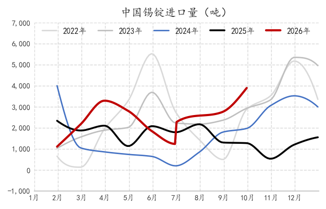
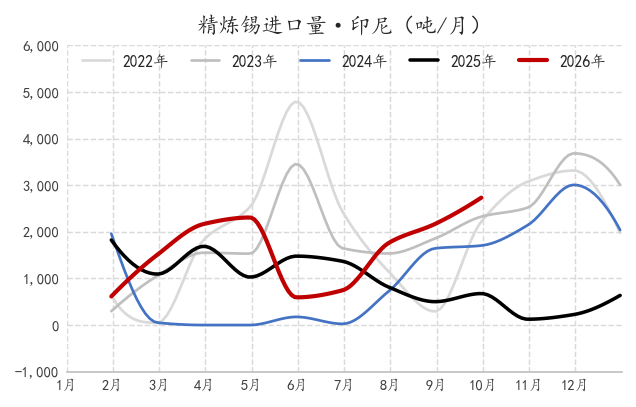
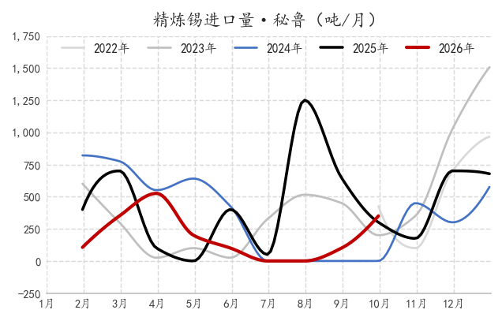
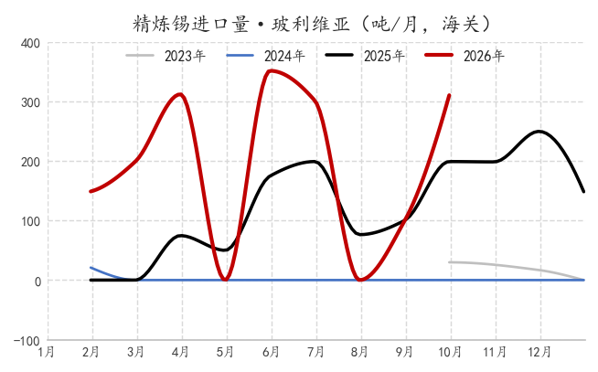
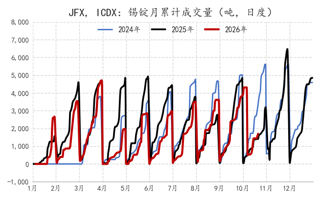
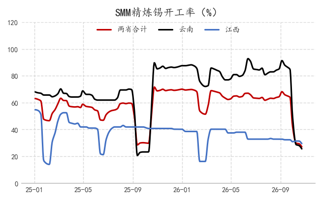
需求DEMAND
- 本周下游成交 1,445 吨，较上周 2,442 吨减少 997 吨；10/23 单日成交 524 吨，低价时仍有补库，但周度总量明显下降。
- 10 月 Mysteel 焊料总开工率 69.35%（环比 -0.65pct），大型 82.56 / 中型 72.85 / 小型 52.63；SMM 9 月开工率为 79.1%，两口径频率和样本不同，分别观察趋势。
- 后续核心验证下游终端订单能否接续，并观察订单能否转化为持续开工、排产和采购。若订单没有跟进，低价补库和库存去化的持续性将受限，不能直接把去库等同于终端需求转强。
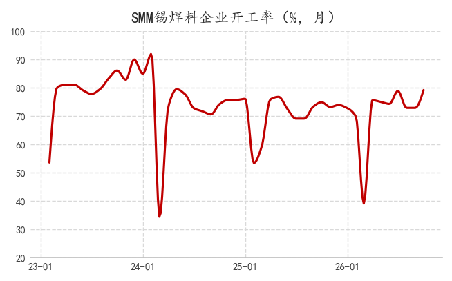
- 最新周 PVC 产量 37.39 万吨，浮法玻璃产量 1,002,155 吨；两项合计耗锡拟合 984.92 吨/周。
- 周度高频用于观察锡化工刚需变化，月度糊树脂、农药与进出口数据统一放在详细周报。
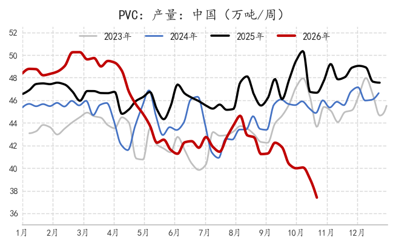
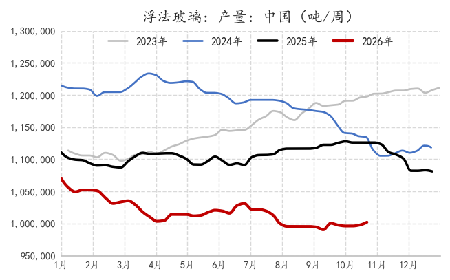
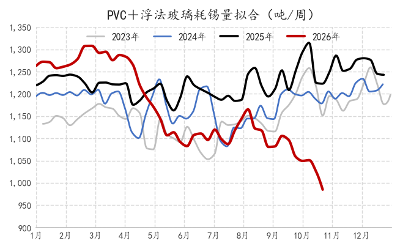
- 最新月出口 20,658,680 个，进口 485,796 个；进口量级较小，单独置于右轴，避免贴线误读。
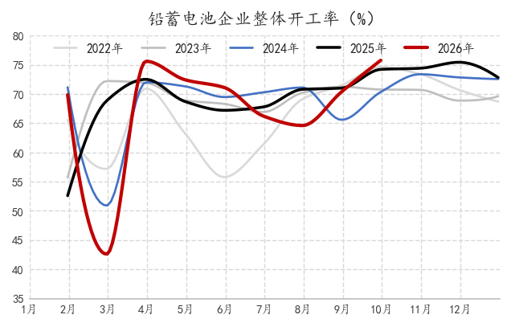
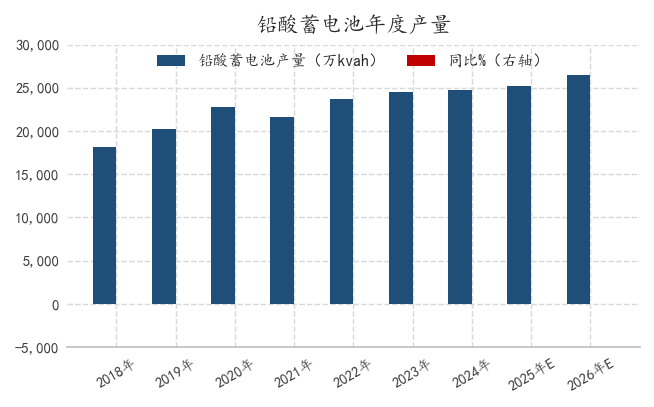
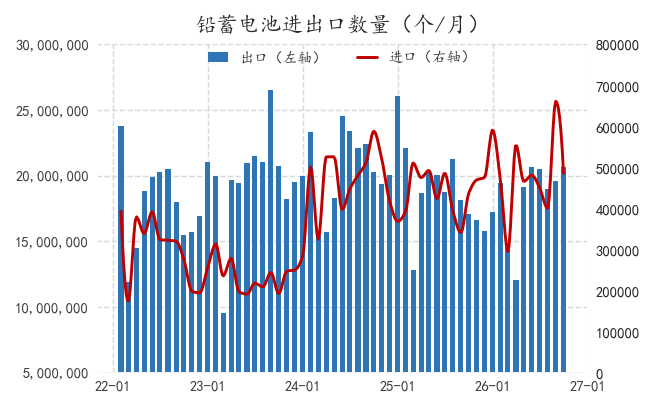
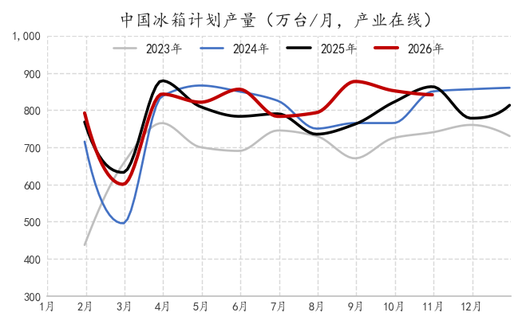
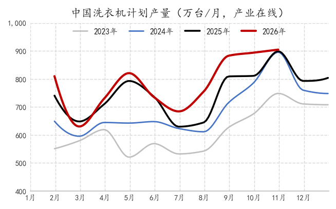
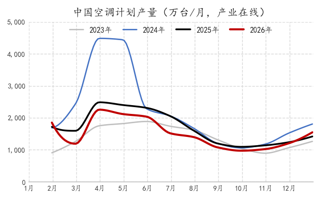
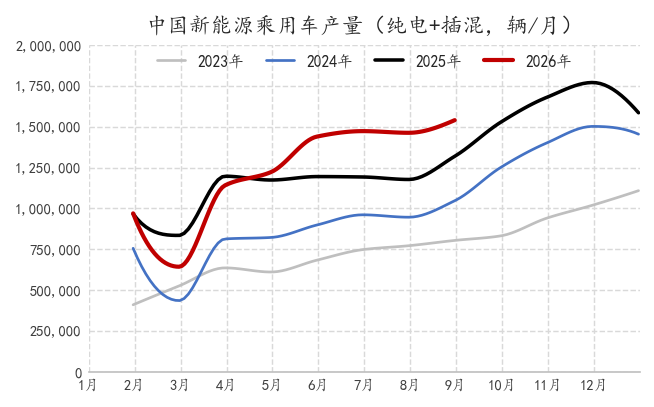
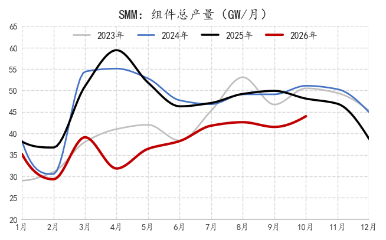
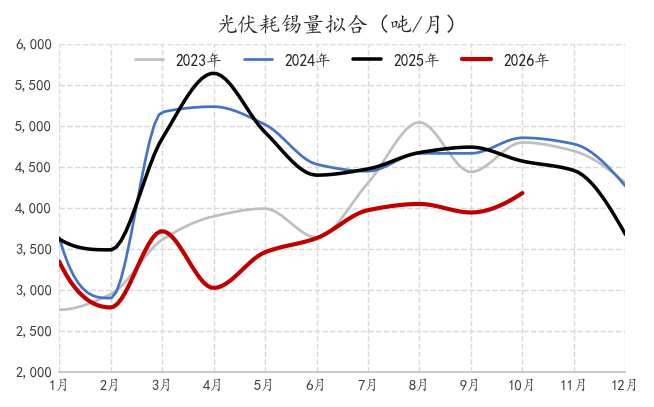
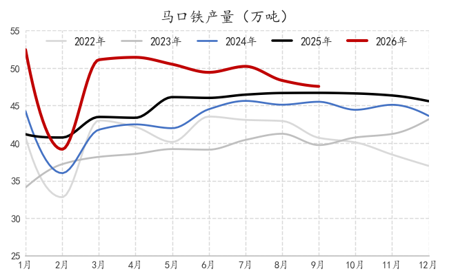
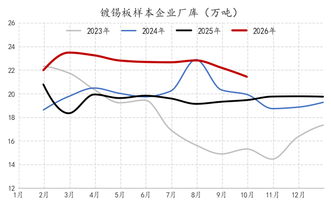
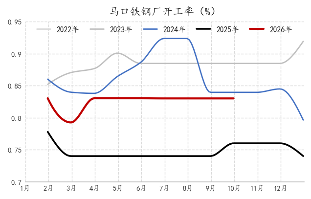
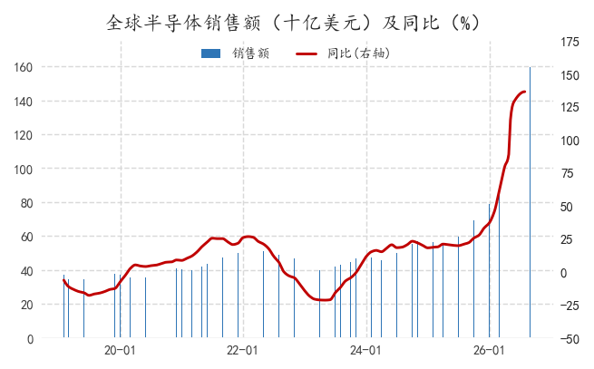
现货与进出口SPOT & TRADE
- 下游：周度成交 1,445 吨，较上周 -997 吨。
- 贸易商：周度成交 459 吨，较上周 -360 吨。
- 成交均价：本周日均约 383,000 元/吨，主要区间 370,000–375,000 元/吨；上周日均 388,500 元/吨。
- 现货升水大幅抬升：云锡 3,000 → 3,500 元/吨（周 +500），云字 3,000 / 小牌 2,500 同步走高；现货偏紧，中游贸易环节库存偏干，可流通货源近乎出清。
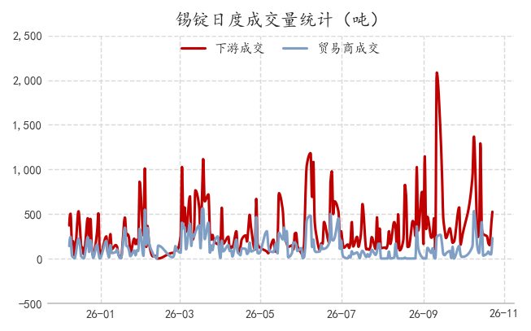
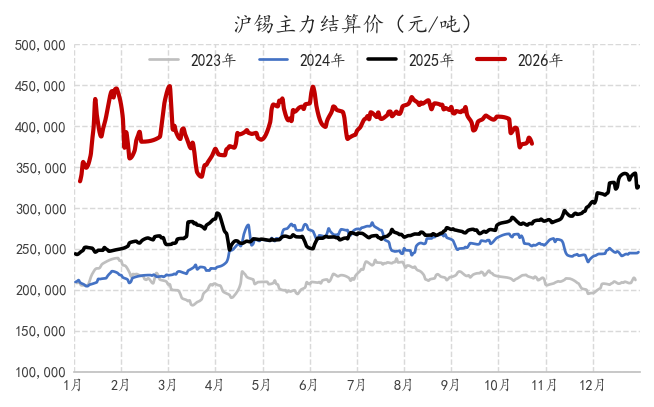
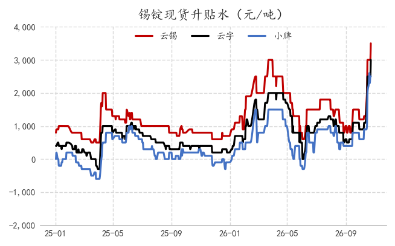
- 现货进口盈亏由 10/16 的 -2,778 元/吨修复至 10/23 的 -253 元/吨，进口窗口已接近打平；后续若转为持续盈利，需要重新评估远端到货压力。
- LME Cash-3M 10/23 为 +60.77 美元/吨，由前期贴水转为升水，海外近月现货结构同样偏紧。
- 国内连一－连二 Back 为 2,340 元/吨，高于正套参考入场区间；进口窗口、外盘升水与国内月差需一起跟踪，避免把跨市和跨期策略混为一谈。
策略观点与下周验证点STRATEGY & WATCHLIST
- 结构：预计本周显性库存继续去化，低库存带来逼仓风险，叠加炼厂减产意愿和上游惜售，正套优先。连一－连二价差回落至 1,000–2,000 元/吨时择机买近抛远；最新 2,340 元/吨已高于参考区间，不追价。
- 单边：仍由宏观决定，重点看中东与美股财报。宏观没有额外利好时，39 万元/吨附近为短期顶部区间，可作为空配；低库存环境下不追空，等待反弹和事件信号。
- 上行风险：炼厂减产落地、上游持续惜售、去库和仓单下降超预期，或美股财报强劲引发近月挤仓；若价格放量站稳 39 万，应重新评估空配而非机械加仓。
- 下行风险：中东升级与美股财报不及预期形成双利空，或下游终端订单无法接续、去库放缓；若正套已入场，重点管理价差继续走扩后的回撤和流动性风险。
- SMM/Mysteel 社库是否继续下降，SHFE 仓单是否延续快速去化，现货升水能否维持；上游惜售是否造成实际成交和可流通货源进一步收缩。
- 炼厂减产意愿是否落实到开工率和周产量，厂库是否同步下降；连一－连二价差是否回到 1,000–2,000 元/吨。
- 下游终端订单是否接续，并能否转化为持续开工、排产和采购，而非仅低价补库或贸易环节搬库。
- 中东局势与油价、以色列大选、FOMC 和欧洲央行表态；重点识别通胀冲击与避险需求哪一条主导有色定价。
- 海力士、三星、谷歌、微软、亚马逊、英特尔等财报和电话会，核对 AI 订单、资本开支、收入、利润与经营现金流是否匹配。
图表工作区 · 自选指标叠加CHART LAB
AI耗锡量：算力硬件全链路需求测算AI TIN DEMAND
- 需求起点：大模型训练、推理与智能体应用推动云厂商扩大算力投入，GPU、HBM、高速光模块和高多层 PCB 同步放量。资本开支本身不直接耗锡，只有继续转化为芯片、板卡和整机柜出货，并带动封装、PCB 与贴片产线运行，才形成实物需求。
- 传导链条：云厂商资本开支 → AI 芯片及整机柜出货 → 先进封装、高阶 PCB 与 SMT 产量 → 锡球、微凸块、镀锡化学品、锡膏和锡条消耗。研究重点是找到每一环可跟踪的实物量，而不是用投资额直接替代耗锡量。
- 为什么使用锡：锡兼具焊接性、导电性和物理稳定性。芯片端依靠锡球与微凸块完成微互连，板级依靠锡膏形成大量焊点，PCB 制程则在电镀、线路蚀刻保护和表面处理中使用锡材。
- 材料结构：板级焊接以普通工业锡材为主，是全链路的主要数量来源；芯片端体量较小，但对纯度、粒径和一致性的要求更高，体现高纯锡的结构性需求。因而“总吨位增长”与“高纯材料升级”需要分别判断。
- 时间维度：终端消耗发生在生产制造阶段，采购则可能因备库、试产和产线铺底提前出现。AI 对锡市场的影响既包括年度消费中枢上移，也包括扩产阶段采购节奏前置。
锡究竟耗在哪里？
数量看板级焊接，材料升级看芯片端高纯锡。
- 空间边界：覆盖先进封装、PCB 电镀和 SMT 贴片，并对 EUV 光刻作独立跟踪。芯片、板卡与整机属于上下游关系，不能把各环节已经包含的同一批锡材重复相加。
- 数量边界：年度耗锡是制造过程中的消耗口径；企业为试产、备库和铺底库存形成的采购口径单独观察。采购前置会改变需求出现的年份，但不等于永久增加终端消耗。
- 架构变化：Scale-Out 主要通过增加服务器节点扩展算力，Scale-Up 则强化服务器内部及机柜内的高速互连。后者提高计算板、交换板、电源板和连接器的集成密度，使 PCB 面积、层数、焊点数量与单板制造难度同步上升。
- 出货结构：传统 8GPU 服务器出货趋于收缩，AI 整机柜成为主要增量载体；整机柜渗透率预计由 2026 年的 32.5% 升至 2030 年的 53.8%。因此，芯片端不是简单跟随服务器台数增长，而是由产品组合切换驱动。
- 板型结构：PCB／SMT 按多层板、HDI 和封装基板分别测算。三类产品的面积增速与单位面积耗锡不同，分开计算可以识别“总量扩张”和“高阶化”各自贡献。
- 结果属性：2026—2030 年数值是基于出货、渗透率和单耗假设的情景测算，不是企业产量指引。后续数据更新应先替换出货与面积，再校准单耗和爬坡参数。
| 环节 | 计算路径 | 决定结果的核心变量 |
|---|---|---|
| 先进封装 | 传统 8GPU 服务器出货量 × 单耗 ＋ AI 整机柜出货量 × 单耗 | 两类硬件出货、整机柜渗透率、HBM／Chiplet 封装复杂度、单位微互连耗锡 |
| PCB／SMT | Σ（多层板、HDI、封装基板有效面积 × 对应单位面积耗锡） | 板型面积、层数与密度、良率、电镀及贴片单耗 |
| EUV 光刻 | 先进制程晶圆量 × EUV 层数 × 单位晶圆锡耗 | 晶圆产量、EUV 层数、设备稼动率、锡微滴利用效率 |
| 扩产项目 | 有效新增产能 × 单位面积耗锡 × 当年爬坡比例 | 投产时间、设备进厂、试产、良率、稼动率及采购前置周期 |
阅读表格时需区分“先进封装年度耗锡”“AI 相关 PCB／SMT 年度耗锡”和“单个扩产项目新增耗锡”：前两者构成全链路年度结果，项目测算用于解释增量兑现节奏，不再额外叠加到全链路总量上。
从硬件架构到锡耗：数量、密度、面积和良率共同作用
- 数量效应：GPU、HBM、交换机芯片和光模块出货增加，会同时拉动封装与板级互连需求。但芯片颗数、服务器台数和整机柜数量不是同一单位，必须先统一硬件口径，再匹配各自的单位耗锡。
- 密度效应：Scale-Up 提高机柜内计算密度和高速互连密度，即使整机外观数量不变，内部计算板、交换板、供电与连接系统也可能增加。密度提升主要影响焊点数量、元器件贴装和高阶 PCB 使用比例。
- 面积效应：PCB 电镀和部分表面处理更接近面积驱动，SMT 则同时受板面积、元器件数量和焊点密度影响。因此不能只用服务器台数估计全部板级锡耗，也不能只用 PCB 面积解释全部锡膏需求。
- 微型化对冲：先进封装中，互连点数量增加并不必然带来同比例锡耗增长。凸块和锡球尺寸缩小、工艺收得率提高，会降低单点或单位面积耗锡；最终结果取决于互连数量增长与微型化降耗的差值。
- 有效产出：高阶 PCB 的名义面积产能需要经过良率与稼动率修正。试产阶段良率偏低时，投料和采购可能先发生，但合格品出货较慢；只看合格板面积或只看投料面积，都可能误判真实消耗。
- 库存效应：锡价快速上涨或供应预期收紧时，企业可能增加安全库存，采购量短期高于生产消耗；去库存阶段则相反。库存变化解释的是时间差，不应直接计入长期单耗。
先进封装：整机柜取代传统 8GPU 服务器成为增量来源
- 耗锡位置：锡球和微锡凸块承担芯片、晶圆与封装基板之间的电气互连。HBM 堆叠、Chiplet 和 2.5D／3D 封装提高微凸块数量与封装复杂度，但单个互连点体积很小，因此总耗锡仍明显低于板级焊接。
- 数量与结构：芯片端耗锡预计由 2026 年的约 328 吨增至 2030 年的约 508 吨，累计增加约 180 吨，增幅约 54.9%，年均复合增速约 11.6%。同期其占全链路耗锡的比重由约 2.7% 降至约 2.2%，原因是板级耗锡增长更快。
- 整机柜贡献：AI 整机柜耗锡由 207.03 吨升至 408.98 吨，接近翻倍，占芯片端的比重由约 63.1% 升至约 80.6%；传统 8GPU 服务器耗锡则由 120.93 吨降至 98.69 吨。芯片端增长实质上完全来自整机柜放量。
- 年度节奏：2027、2028 年芯片端同比增加约 46 吨、60 吨，是本轮增量较高的两个年份；2029、2030 年新增量约 44 吨、30 吨，体现高基数下增速逐步放缓。
- 单耗理解：这里的“单位耗锡”是封装环节的综合结果，既受锡球、微凸块数量影响，也受尺寸、合金比例、工艺损耗和回收处理影响。跟踪时应尽量使用同一封装平台、同一产品代际的可比单耗，避免跨产品直接套用。
| 先进封装耗锡 | 2026E | 2027E | 2028E | 2029E | 2030E |
|---|---|---|---|---|---|
| 传统 8GPU 服务器（吨） | 120.93 | 101.40 | 112.56 | 107.64 | 98.69 |
| AI 整机柜（吨） | 207.03 | 272.32 | 321.30 | 369.92 | 408.98 |
| 合计（吨） | 327.96 | 373.72 | 433.86 | 477.56 | 507.67 |
| 同比增速 | — | 13.95% | 16.09% | 10.07% | 6.30% |
芯片端表格为先进封装口径。全链路表格为便于阅读采用取整值，因此 328、374、434、478、508 吨与本表合计存在四舍五入差异。
EUV 光刻：高纯锡是光源系统的工艺耗材
- 工艺原理：EUV 光源以高纯锡微滴为靶材，经高功率激光激发形成等离子体并产生 13.5nm 极紫外光。这里的锡不参与焊接，而是随先进制程晶圆制造持续消耗。
- 驱动变量：需求主要取决于先进制程晶圆产量、单片晶圆使用的 EUV 层数、设备稼动率及单位晶圆锡耗。AI 芯片需求只有先传导至晶圆投片和 EUV 工艺使用量，才会形成这一环节的锡耗。
- 测算处理：目前缺少可连续核验的年度晶圆量与单位锡耗参数，因此 EUV 保持定性跟踪，不在先进封装表格上另行叠加数值，避免用未经校验的假设放大芯片端结果。
- 外推限制：EUV 属于晶圆前道制造，先进封装属于后道封装，两者的驱动指标并不相同。AI 芯片设计需求、晶圆投片、封装产出和整机出货之间存在良率与库存时滞，不能把 EUV 锡耗按服务器出货量简单线性外推。
三类板型的用途和耗锡驱动并不相同
| 板型 | 在 AI 硬件中的主要位置 | 耗锡驱动与复核重点 |
|---|---|---|
| 多层板 | 计算、交换、供电及其他板级系统，是较大面积板卡需求的重要载体 | 重点看有效板面积、层数、板面电镀及贴装单耗；层数增加会影响制造复杂度，但不能直接按层数倍数放大锡耗 |
| HDI 板 | 元器件和高速互连更密集的高密度板级系统 | 重点看高密度设计带来的面积、贴装和制程变化；微孔、细线路与良率会影响有效产出，应结合实际单耗复核 |
| 封装基板 | 连接芯片封装与板级系统的高密度承载基板 | 重点看 AI 芯片与 HBM 封装出货、基板面积和封装形式；其增长同时受芯片数量和先进封装复杂度影响 |
三类板型需要分别获取“有效面积 × 单位面积耗锡”。只用 PCB 总产值、层数或投资额，无法稳定推出锡耗，因为产品价格、产品结构和良率都会改变金额与实物量之间的关系。
- PCB 制程：锡用于板面电镀、线路蚀刻保护和表面防腐处理。AI 服务器高层数、高速、高密度设计提升单板面积与制造难度，有效产出还受到良率和爬坡影响，是多层板、HDI 和封装基板耗锡增长的共同基础。
- SMT 贴片：锡膏经印刷和回流焊，将 GPU、存储、供电、光模块及其他元器件连接到 PCB 焊盘。整机柜内部计算板、交换板和电源板数量增加，既扩大板面积，也提高元器件与焊点密度。
- 多层板：2026—2030 年耗锡由 5,562 吨增至 9,994 吨，增加 4,432 吨，约占板级总增量的 42.4%，仍是绝对增量最大的板型；年均复合增速约 15.8%。
- HDI 板：耗锡由 3,326 吨增至 6,280 吨，增加 2,954 吨，约占板级总增量的 28.3%；年均复合增速约 17.2%，反映高密度互连需求提升。
- 封装基板：耗锡由 2,923 吨增至 5,987 吨，增加 3,064 吨，约占板级总增量的 29.3%；年均复合增速约 19.6%，在三类板中最高，占板级耗锡的比重由约 24.8% 升至约 26.9%。
- 结构判断：PCB 与 SMT 合计贡献全链路 97% 以上的年度耗锡。2026—2030 年板级耗锡增加 10,449 吨，约贡献全链路总增量的 98.3%，是决定 AI 用锡绝对规模的核心。
| PCB、SMT 耗锡（吨） | 2026E | 2027E | 2028E | 2029E | 2030E |
|---|---|---|---|---|---|
| 多层板 | 5,562 | 7,230 | 8,618 | 9,149 | 9,994 |
| HDI 板 | 3,326 | 4,340 | 5,201 | 5,606 | 6,280 |
| 封装基板 | 2,923 | 3,811 | 4,662 | 5,050 | 5,987 |
| 合计 | 11,811 | 15,381 | 18,481 | 19,806 | 22,260 |
| 合计同比 | — | 30.23% | 20.15% | 7.16% | 12.40% |
同比沿用原始测算序列；分项和合计在展示时经过取整，个别年份直接按展示值复算会有轻微尾差。三类板型的增量贡献和复合增速均依据本表展示值计算。
| 年份 | 芯片端（吨） | PCB、SMT（吨） | 全链路合计（吨） | 当年新增（吨） | 同比增速 |
|---|---|---|---|---|---|
| 2026E | 328 | 11,811 | 12,139 | — | — |
| 2027E | 374 | 15,381 | 15,755 | +3,616 | 29.79% |
| 2028E | 434 | 18,481 | 18,915 | +3,160 | 20.06% |
| 2029E | 478 | 19,806 | 20,284 | +1,369 | 7.24% |
| 2030E | 508 | 22,260 | 22,768 | +2,484 | 12.25% |
- 总量：2026—2030 年全链路耗锡由 12,139 吨增至 22,768 吨，累计增加 10,629 吨，增幅约 87.6%，年均复合增速约 17.0%。“接近翻倍”指累计增幅，不是每年翻倍。
- 年度节奏：2027 年新增 3,616 吨、2028 年新增 3,160 吨，是增量最高的两个阶段；2029 年新增量收窄至 1,369 吨，2030 年回升至 2,484 吨。12.25% 是 2030 年当年的同比增速，不是 2026—2030 年复合增速。
- 增量拆解：四年芯片端仅增加约 180 吨，PCB／SMT 增加约 10,449 吨。换言之，全链路增长主要由板级制造决定，芯片端更多体现高纯锡材料需求与先进封装景气度。
- 全球占比：按本专题全球锡消费假设，2026 年约 35.72 万吨、2030 年约 40 万吨，AI 全链路占比分别约为 12,139÷357,200＝3.4%、22,768÷400,000＝5.7%。占比提升说明 AI 对边际需求的影响增强，但仍需与传统焊料、锡化工和镀锡板需求共同判断总平衡。
- 弹性来源：若出货量或有效 PCB 面积变化，在其他参数不变时，相应环节耗锡近似同方向变化；若单位耗锡因工艺优化下降，则会抵消一部分面积和焊点增长。实际结果取决于“数量 × 单耗”的净效应。
全链路结果的四个复核公式
| 复核项目 | 计算过程 | 结果与含义 |
|---|---|---|
| 四年总增量 | 22,768－12,139 | 10,629 吨，表示 2030 年相对 2026 年的年度耗锡增加量 |
| 年均复合增速 | （22,768÷12,139）^（1÷4）－1 | 约 17.0%，用于描述四年平滑增长，不代表每一年的实际同比 |
| 板级增量贡献 | （22,260－11,811）÷（22,768－12,139） | 10,449÷10,629≈98.3%，说明新增吨位几乎全部来自 PCB／SMT |
| 当年新增量 | 本年全年耗锡－上一年全年耗锡 | 2027 年为 15,755－12,139＝3,616 吨，其余年份按同一方法计算 |
年度耗锡是“当年流量”，不是截至该年的累计消耗。把 2026—2030 年各年耗锡相加，才会得到这一期间累计消耗；本专题的“四年总增量”专指 2030 年与 2026 年两个年度流量之差。
本周更新：HBM 配置升级正在抬高高阶 PCB 与封装基板需求
- 核心结论：AI 对锡的拉动正在从“服务器数量增加”扩展到“单机 PCB 面积、层数、HDI 与焊接密度提升”。HBM 堆叠层数和单芯片搭载量增加，首先改变芯片封装、供电和高速互连要求，再向高多层板、HDI、封装基板及 PCBA 传导；不能把 HBM 层数或 PCB 产值增速直接等同于耗锡增速。
- 英伟达 Rubin（机构预测，待量产验证）：韩国大信证券认为，受 HBM 基础裸片供应约束及客户优先追求带宽影响，Rubin 原定混用 8 层和 12 层 HBM 的方案可能调整为仅采用 12 层。计划 2027 年推出的 Rubin Ultra 正推进多个架构版本流片，初期预计采用最高规格 8 层 HBM4，后续升级至 8 层或 12 层 HBM4E。
- AMD 与客户配置（机构预测，待量产验证）：预计 2027 年产品混用 8 层和 12 层 HBM4；MI450 单个 CoWoS 封装内 HBM 堆叠数量可能由 8 组增至 12 组，总容量达到 288GB。OpenAI 相关 AI 芯片据报采用 12 层 HBM4，Anthropic 则采用 8 层 HBM4，说明不同客户的带宽、容量和成本取舍并不一致。
- 对耗锡研究的含义：HBM 升级是 PCB 技术升级的上游驱动，不是可以独立按层数折算的锡耗项目。真正需要进入模型的是后续芯片封装出货、基板面积、计算板与交换板面积、元器件和焊点密度、PCBA 单耗及良率。
从芯片配置到板级耗锡：四条可验证的传导链
| 传导环节 | 已观察到的技术变化 | 对锡需求的跟踪方法 |
|---|---|---|
| 芯片与 HBM 配置 | 更高堆叠层数、更多 HBM 组数及更大单封装容量，提高带宽、供电和封装复杂度 | 跟踪 AI 芯片与 HBM 实际出货、先进封装稼动率；不把 HBM 层数直接换算成锡耗 |
| PCB 面积与层数 | Prismark 预计 VR200 NVL144 CPX 相比 GB200 NVL72 的 PCB 面积增加 30%—50%，PCB midplane 预计超过 40 层；AI 机架背板方案可达 78 层或 104 层 | 按“有效板面积 × 单位面积耗锡”测算，层数用于判断结构和制造难度，不按层数倍数放大锡耗 |
| HDI、微孔与材料 | H100 到 Rubin 的板级方案向 26—30 层及更高演进，CCL 从 M6／M7 向 M8、M8.5／M9 升级，孔径向微孔发展 | 跟踪高阶 HDI 出货、良率与 PCBA 贴装；钻孔设备和 CCL 升级本身不是直接耗锡增量 |
| SMT 与 PCBA | 计算板、交换板、供电板和连接器增加，高速互连与元器件贴装更密集 | 以锡膏采购、焊料开工、SMT 稼动率和库存验证实际消耗，区分采购前置与终端消耗 |
行业证据：高阶产品显著强于行业总量，但增长高度分化
| 指标 | 基期 | 目标期 | 增速／变化 | 口径 |
|---|---|---|---|---|
| 全球裸板 PCB 市场 | 2024：736 亿美元 | 2025：858 亿美元 | +16.7% | 2025 实际值 |
| HDI | 2024 | 2025 | +29.4% | 2025 实际值 |
| 多层板／18 层以上 | 2024 | 2025 | +19.3%／超过 +80% | 2025 实际值 |
| 封装基板 | 2024 | 2025 | +18.2% | 2025 实际值 |
| Server／Data Storage PCB | 2024：109.16 亿美元 | 2029F：257.29 亿美元 | CAAGR 18.7% | Prismark 预测 |
| 其中：HDI | 2024：12.84 亿美元 | 2029F：46.97 亿美元 | CAAGR 29.6% | Prismark 预测 |
| 其中：先进 HLC＋HDI | 2024：22.35 亿美元 | 2029F：79.10 亿美元 | CAAGR 28.8% | Prismark 预测 |
| 前 40 家公开 PCB 企业资本开支 | 2024：74 亿美元 | 2025：94 亿美元 | +27% | 2025 实际值 |
- 结构重于总量：2025 年 AI 服务器和高速网络领先供应商的营收增速可超过 50%，但多数 PCB 供应商不足 10%。因此不能把高阶 AI 板的景气度线性外推至全部 PCB，也不能用全行业产值增速替代锡的实物消费增速。
- 产能瓶颈向传统电子外溢：据日经新闻采访，AI 算力正在挤占 PCB 和芯片封装基板产能，惠普、戴尔等 PC 厂商在规划 2027 年供应时已将各类 PCB 视为关键瓶颈；即使 PC 出货量可能再次下滑，仍担心无法锁定足够供应。这是“高端产能紧、传统需求弱但供应仍受挤压”的组合，不代表消费电子数量需求已经转强。
- 材料约束影响兑现节奏：低损耗材料、低 CTE 玻纤和 HVLP 铜箔是高阶板的重要约束。Prismark 预计低 CTE 玻纤新增供应到 2027 年才逐步释放，因此项目投产、合格品爬坡和实际耗锡之间可能存在时滞。
- 2026 年仍属预测：Prismark 在 2026 年 1 月预计全年 PCB／基板产值增长 9.1%，HDI 约增长 13%，多层板约增长 11%，封装基板超过 9%；材料短缺带来的 ASP 上涨可能使基板产值增幅超过 15%。这些数值不能当作已实现产量或耗锡。
全球 PCB—PCBA 耗锡基准：面积扩张之外，单耗也在变化
| 全球 PCB 口径 | 2025 | 2026E | 2027E | 2028E |
|---|---|---|---|---|
| 生产面积（百万㎡） | 611.95 | 627.68 | 647.90 | 658.20 |
| 加权平均 PCBA 单耗（g／㎡） | 243.16 | 244.45 | 247.93 | 247.63 |
| 对应 PCBA 耗锡量（千吨） | 148.80 | 153.44 | 160.64 | 162.99 |
| 当年新增耗锡（千吨） | — | 4.64 | 7.20 | 2.35 |
- 结构弹性可见：原表中 18—32 层板生产面积由 2025 年 4.5 百万㎡升至 2028 年 8 百万㎡，32 层以上由 0.45 百万㎡升至 1.2 百万㎡；对应 PCBA 单耗也明显高于单双面板和 4—6 层板。这支持“面积＋结构＋单耗”共同判断，而不是只看服务器台数。
- 口径不可混用：该表是全球全部 PCB 对应 PCBA 的焊锡测算，不是 AI 专属耗锡，也不包含本专题所有芯片端口径；它用于校验板级基准，不能与前文 AI 全链路或 9 个旗舰项目增量直接相加。
- 后续验证顺序：优先更新 PCB 有效面积、18 层以上与 HDI 占比、单机 PCB 面积和 PCBA 单耗，再用焊料开工、锡膏订单、SMT 稼动率和终端订单交叉验证。若微型化、工艺收得率或回收率降低单耗，应抵消部分面积和焊点增长。
本节新增资料：用户提供韩国大信证券观点及日经新闻报道（2026-10-27，机构预测与媒体采访，方案仍待量产和供应链验证）；Prismark《Global Leading PCB Companies – 2025》（2026-05）；《AI 对 PCB 的挑战与机遇》（2026-01-27）；《锡周报》（2026-06-07）第 26 页；PCB 设备深度资料（2026-03，技术路线与预测）。全球 PCB—PCBA 表格已按原 PDF 页面复核，原表部分合计存在四舍五入尾差。
- 投产节奏：2025 年公告的新建项目集中在 2026 年下半年投产，2026Q3 是设备进厂与试产的重要节点；2026 年新公告的高端 HLC／HDI 项目主要在 2027—2028 年释放，形成 2026H2—2028 的产能集中释放期。
- 传导顺序：项目公告不等于耗锡立即发生。较合理的跟踪顺序是设备进厂 → 试产打样 → 良率爬坡 → 稼动率提升 → 稳定量产。试产和铺底库存往往先形成采购，稳定量产后才转化为持续消耗。
- 需求前置：PCB 产线通常在投产前 1—2 个季度锁定锡膏和镀锡化学品。中性测算下，采购高峰落在 2026H2—2027H1，早于产能达产高峰；因此月度采购数据可能领先年度实际耗锡。
- 旗舰项目下限：9 个披露面积产能的头部项目合计约 468.2 万㎡／年，按 318g 锡／㎡测算，满产年化耗锡约为 468.2×10,000×318÷1,000,000≈1,489 吨。2026、2027 年新增耗锡分别约 575 吨、429 吨，是爬坡增量最集中的两个年份。
- 下限含义：未披露面积产能的项目及存量产线利用率提升未计入 9 项目测算，因此 1,489 吨是已披露项目的满产年化下限，不是行业年度总增量，也不能直接视为某一年的实际消耗。
- 行业总量与单耗：全球 PCB 环节耗锡量预计由 2026 年 16.3 万吨增至 2030 年 21.2 万吨，累计增加 4.9 万吨；AI 服务器 PCB 面积、层数与单机耗锡均高于传统服务器，是总量扩张之外的核心弹性。
- 采购与消耗分离：中性情景表内，2025—2027 年采购口径相对消耗口径的前置量分别为 202、385、282 吨，随后逐步收敛。前置量已经包含在采购口径中，不能再与采购量或消耗量重复相加。
- 扩展情景：将仅披露投资额的大陆项目按投资额折算产能，中性情景下本轮扩产满产年化耗锡约 2,900 吨，2030 年测算约 2,919 吨；折算系数差异较大，应理解为量级估计，优先级低于直接披露面积产能的项目。
- 风险与验证：若 AI 服务器出货放缓、PCB 产能集中释放引发价格竞争，或高锡价继续抑制焊料采购，实际增量可能低于测算。后续重点跟踪设备进厂、试产、稼动率及锡膏采购，而不是只看投产公告。
PCB 投产批次与耗锡测算表（点击展开；表格可编辑）
| 项目启动批次 | 代表事件 | 产能释放时间 |
|---|---|---|
| 2024 年公告/启动 | 胜宏泰国/越南、沪电昆山 43 亿、景旺珠海 | 2025 年底—2026 年初陆续释放 |
| 2025 年公告 | 景旺、鹏鼎、生益电子、东山精密、方正、广合等 | 2026 年下半年集中投产，9—10 月为设备进厂/试产高峰 |
| 2026 年公告 | 沪电 33 亿+55 亿、深南无锡 46 亿、广合 26 亿等 | 2027—2028 年逐步释放 |
| 年份 | 有效新增产能（万㎡/年） | 对应年化耗锡（吨） | 当年新增耗锡（吨） |
|---|---|---|---|
| 2025 | 53.8 | 171 | +171 |
| 2026 | 234.4 | 746 | +575 |
| 2027 | 369.3 | 1,174 | +429 |
| 2028 | 436.4 | 1,388 | +213 |
| 2029 | 454.5 | 1,445 | +57 |
| 2030 | 468.2 | 1,489 | +44 |
| 年份 | 消耗口径（吨） | 采购口径（吨） | 前置量（吨） |
|---|---|---|---|
| 2025 | 167 | 369 | +202 |
| 2026 | 894 | 1,279 | +385 |
| 2027 | 1,929 | 2,211 | +282 |
| 2028 | 2,611 | 2,726 | +115 |
| 2029 | 2,864 | 2,892 | +28 |
资料与测算截至 2026-10-18。单耗按电镀+SMT 合计约 318g/㎡；投资额折算及爬坡曲线均为情景假设，并非企业产量指引。
- 基准判断：AI 已成为锡消费的重要新增来源，2026—2030 年增量主要由 PCB／SMT 贡献，先进封装与 EUV 则提供高纯锡的结构性需求。总量兑现仍取决于实际出货、有效面积和制造稼动率，不能只用资本开支替代实物需求。
- 领先指标：先看云厂商硬件订单、AI 整机柜渗透率、PCB 项目设备进厂和试产节点。这些指标决定后续几个季度的生产准备与采购前置，但尚不能单独证明终端消耗已经兑现。
- 同步指标：再看高阶 PCB 出货、SMT 锡膏采购、PCB 镀锡化学品消耗、产线良率与稼动率。若出货和采购同步上行，且库存没有异常累积，耗锡测算的可信度更高。
- 滞后核验：最后以 HBM、先进封装、先进制程晶圆产量及企业实际产量核验芯片端需求，并将年度实际消耗与模型值对照，回溯修正出货、单耗和爬坡假设。
- 主要风险：硬件出货不及预期、PCB 扩产导致价格竞争、单耗下降、良率爬坡偏慢或高锡价抑制采购，均可能使实际耗锡低于测算；投产公告不等同于达产，备库也不等同于终端消耗。
| 待验证变量 | 需要补充的数据 | 对模型的影响 |
|---|---|---|
| 硬件出货 | 传统 8GPU 服务器、AI 整机柜年度出货及整机柜渗透率 | 决定先进封装总量和产品结构，是芯片端测算的第一层输入 |
| 单位耗锡 | 两类硬件单耗、三类 PCB 单位面积耗锡、EUV 单位晶圆锡耗 | 决定数量增长能否有效转化为锡耗，检验工艺降耗的抵消作用 |
| 有效产能 | 项目面积产能、投产时间、爬坡比例、良率及稼动率 | 把公告产能转换为实际可生产面积，校准年度消耗节奏 |
| 采购前置 | 备库周期、试产采购、铺底库存和后续去库存 | 区分采购高峰与真实消耗，避免把同一批锡材跨年重复计算 |
更新顺序建议为：先替换硬件出货和 PCB 有效面积，再校准单位耗锡与投产爬坡，最后处理采购前置。这样可以把总量、结构和时间节奏分开验证。
按周、月、季、年建立验证顺序
| 频率 | 重点跟踪数据 | 主要验证目的 |
|---|---|---|
| 周度／事件 | PCB 项目设备进厂、试产、锡膏与镀锡化学品订单、锡价及采购反馈 | 识别采购前置和投产节点，判断短期需求是否提前或延后 |
| 月度 | AI 服务器及整机柜出货、高阶 PCB 出货或营收、SMT 稼动率、焊料库存 | 把硬件订单转换为实际生产与采购，观察出货、消耗和库存是否匹配 |
| 季度 | 云厂商资本开支、AI 芯片与 HBM 出货、先进封装产能、项目良率和爬坡 | 校准上下游时滞、有效产能和芯片端需求，检验中期测算方向 |
| 年度 | 分硬件出货、三类 PCB 有效面积、单位耗锡、全球锡消费总量 | 全面更新全链路表格、复合增速、增量贡献和全球消费占比 |
五个容易造成高估或重复计算的地方
- 资本开支不等于耗锡：资本开支还包含厂房、土地、设备和其他基础设施，只有进入硬件制造并形成相关产线运行，才会传导至锡材消耗。
- 公告产能不等于当年产量：项目需要经过建设、设备调试、试产、良率提升和稼动率爬坡。满产年化耗锡只能说明稳定运行后的量级，不能直接填入投产当年的消耗。
- 采购不等于消耗：备库会抬高当期采购，去库存会压低当期采购。若采购和消耗两张表同时进入总量，会把同一批锡材计算两次。
- 出货增长不等于单耗不变：硬件数量增加的同时，封装微型化、焊料工艺改进和回收率变化可能降低单位耗锡，必须分别更新数量和单耗。
- 全链路与项目测算不能相加：全链路表格已经包含 AI 相关 PCB／SMT 年度需求，9 个旗舰项目和扩展情景用于解释其中的增量来源与兑现时间，不是额外的一块需求。
拿到 Excel 后，优先检查年份、单位、产品分类和口径是否一致，再更新公式。若同一指标存在多个来源，保留各自定义与原始值，不用简单平均掩盖口径差异。
矿山成本与边际MINE COST & MARGIN
- 整体印象：2020 年至今，主流矿山的 C2 现金成本几乎全线上台阶，但抬升幅度天差地别——低成本阵营（刚果 Bisie、秘鲁 San Rafael，约 0.6–1.3 万美元/吨）几年间基本原地踏步，而高成本阵营（印尼天马、纳米比亚 Uis）已一路走到 2.1–2.7 万美元/吨，成本曲线右端明显变陡。
- 成本锚：全球现金成本 90 分位线已升至约 2.7 万美元/吨且仍在缓慢爬坡；LME 季度均价相对这条线的溢价处于历史偏高水平。按 ITA 口径，2022 年 90 分位现金成本约 23,171 美元/吨、完全成本约 25,581 美元/吨，2030 年预计分别走到 36,290 / 53,974 美元/吨——矿端成本对锡价的托底作用只会越来越强。
- 需要盯住的边际矿山：缅甸佤邦（矿硐小、机械化低、实物税重）；纳米比亚 Uis 与巴西 Pitinga（品位仅约 0.15%）；印尼天马（陆地砂矿采完转海上低品位矿，成本抬升最快）。这些高成本产能对价格最敏感，是下行周期里最先退出的部分。
- 国内矿山完全成本：云锡约 14.5 万/吨（含冶炼；市场反馈其资产矿口径约 14 万），兴业银锡（银漫）12.2 万/吨，华锡有色矿端 12.5 万/吨。
- 佤邦复产成本推演：参考银漫 0.6% 品位现金成本约 8 万/吨，缅甸自动化程度更低，现金成本约 11–12 万；叠加 Royalty＋30% 实物税及人力杂费，理论完税上限约 20–21 万。市场调研口径：高品位矿完税到国内约 18 万，低品位矿高达 28–29 万——品位决定完税成本档位，低品位矿在当前价位几乎无利可图。
- 海外矿成本梯队（调研口径）：多数矿山矿到冶炼成本不到 3 万美元；阿尔法明 Bisie 矿端约 1 万美元（全球第一梯队低成本），明苏尔相近；缅甸矿与澳矿相对最贵。部分矿山矿到冶炼不到 2.6 万美元。
- 套保行为分化：天马基本不套保（利润率太高）；明苏尔严格套保、主要赚矿端利润；阿尔法明套保同样较少（冶炼多外包）。
- 低成本大矿扰动事件：Alphamin Bisie 2025 年 3 月因武装冲突停产近五周，全年产量指导由 2.0 万吨下调至 1.75 万吨（2024 年 1.73 万吨）——低成本端扰动直接抽紧全球成本曲线右端供给。
详细周报 · 全量数据图表DETAIL DECKS 1–7
详细周报 · AI：半导体、存储与美股验证AI DETAIL
- 韩国计算机设备出口、韩国存储器出口价格、SOX、KOSPI、纳斯达克及 NAND Flash 均保留在此；月度序列另包含台积电营收、台湾电子 PMI 新订单、韩国半导体出口、日本与北美 PCB，以及台股 PCB 制造、原料和铜箔基板营收。
- 韩国存储器出口价格采用 UN Comtrade HS854232 的出口金额÷净重，最新有效月为 2025-12，约 3,516.27 万美元/吨；该口径也会受产品结构和出口均价影响，并非单一存储芯片现货报价。2026 年 1—9 月经接口核查暂无返回数据。
- NAND Flash 64Gb 最近有效数据为 10/12 的 42.337 美元；之后的 #N/A 均保留为缺数，不按零值处理。韩国半导体月度出口的单位严格沿用原表“百万美元”。
- 下周科技财报密集：周三海力士电话会；周四谷歌、微软业绩与三星电话会；周五亚马逊、英特尔业绩。SOX 本周高波动，说明市场对算力链盈利持续性的分歧仍然较大。
- 云厂商：沿用“订单—资本开支—收入—利润—现金流”的验证链条，重点看 AI 订单和资本开支能否转化为收入、利润与经营现金流，而不仅是继续上调投入。
- 存储与硬件：三星、SK 海力士需要验证 HBM 增长能否兑现为利润，英特尔等则提供硬件链需求与盈利的另一侧证据。对锡而言，这决定 AI 焊料预期是获得现实支撑，还是继续回吐溢价。
- 美股定价与锡的映射：财报不仅决定科技指数方向，也会通过风险偏好和实际利率预期影响有色估值。业绩超预期且盈利质量改善，才有利于锡的算力链需求预期；若仅资本开支上升而收入、现金流不跟进，需防估值压缩与需求预期下修共振。
- 交易含义：财报超预期与低库存共振时，近月反弹和逼仓风险会加大；财报不及预期且中东升级时，单边空配更占优。财报公布前不宜把单一方向仓位打满。
详细周报 · 供给端一：矿端（储量 · 产量 · 项目 · 锡精矿进口）DECK 1
| 国家 | 公司 | 项目名称 | 开发阶段 | 规模 | 预计投产 | 备注 |
|---|---|---|---|---|---|---|
| 刚果(金) | AVA矿产公司 | Manono | 可行性 | 0.14万吨/年 | 2023年底 | 2023MRE（矿产资源估算）显示，锡品位为0.17%，矿产资源为8390万吨，含锡 |
| 刚果 | Alphamin | MpamaSouth | 投产 | 0.72万吨/年 | 已投产 | Mpama South的钻探结果显示了显著的锡矿化，尤其是在现有资源下方的延伸区域。 |
| 纳米比亚 | Andrada | Uis | 投产 | 0.15万吨/年 | 已投产 | Andrada拥有并运营的位于纳米比亚的Uis矿于2019年底开始生产锡精矿，并一直 |
| 澳大利亚 | SkyMetals | Tallebung | 探测中 | 含锡量1.84万吨 | 2024年以后 | Tallebung项目拥有锡资源总量1560万吨，平均品位0.15%。矿区整体勘探目 |
| 澳大利亚 | AustralianTinResources | Ardlethan | 含锡量6.65万吨 | 已投产 | 品位不足 0.2%；2024 年 10 月已发运第 10 批货；运营成本处于全球锡矿 | |
| 溴大利亚 | First Tin | Taranga | 可行性 | 含锡量13.81万吨 | 2027 年 | 全球第四大未开发锡资源；9 年矿山寿命；峰值采矿率 1000 万吨 / 年2024年 |
| 澳大利亚 | Stellar Resources | Heemskirk | 探索中 | 含锡量7.8万吨 | 未定（预计 2027 后） | Heemskirk项目距塔斯马尼亚历史悠久的Renison矿山仅约15公里，2026 |
| 秘鲁 | Tinka Resources | Ayswilca | 探索中 | 0.2万吨/年 | 2026 年后 | 主产品锌精矿 9 万吨 / 年；锡为副产品；项目寿命 21 年。于2023年6月成功 |
| 德国 | First Tin | Tellehauser | 可行性 | 0.33万吨/年 | 2025年以后 | 伴生铟、铜、锌；欧洲战略项目。FirstTin计划于2024年第一季度为其位于新南成 |
| 英国 | Tungsten West | Hemerdon | 可行性 | 0.05万吨/年 | 2026 年底 | 主产品钨精矿 3,500 吨 / 年；历史老矿重启；已产出首批钨精矿。 |
| 刚果（金） | Rome Resources | Kalayi | 首个钻孔进行中 | / | 2028 年后 | 2024年8月。Kalayi与Mont Agoma矿区一起构成了该公司的Bisie北 |
| 中国 | Weilasituo矿业公司 | Weilasituo | 探索中 | 含锡量5.8万吨 | 2025年以后 | 2025年4月21日，内蒙古赤峰市克什克腾旗维拉斯托锂多金属矿正式获颁采矿许可证。该 |
| 英国 | CornishMetals | SouthCrofty | 可行性验证 | 0.39万吨/年 | 2026年以后 | CornishMetals公司（AIM/TSX-V：CUSN）宣布，公司有望在202 |
| 摩洛哥 | Atlantic Tin /兴业银锡 | Achmmach | 试运营 | 含锡量21.3万吨 | 2026年以后 | 2024年11月。该公司为其在摩洛哥的项目提供了最新的矿产资源估算，为3910万吨， |
| 哈萨克斯坦 | Tin One | Great Pyramid | 初步探索中 | 含锡量1.44万吨 | 2027年以后 | 锡品位 0.17%；北极圈环境挑战；技术和资金瓶颈；政府支持项目2023MRE（矿产 |
| 西班牙 | Elementos | OropesaProject | 可行性 | 0.33万吨/年 | 2027年底 | 储量 1590 万吨 @0.36% Sn；已收购冶炼厂；欧洲唯一原生锡生产商规划。2 |
| 玻利维亚 | Eloro Resources | lska-lska | 初步探索中 | 含锡量13万吨 | 暂未有预计时间（2023年初次公布探测） | 低品位 (平均 0.12%) 但规模大 (1.1 亿吨)；部分钻孔品位达 0.5%- |
| 中国 | 新金路 | 栗木钽铌锡多金属矿 | 可行性 | 60万吨/年 | 暂未有预计时间 | 60万t/a采矿改建项目是栗木锡矿复工复产的三大关键项目之一，是采矿工程中的关键一环 |
| （千吨） | 2024年2季度 | 2024年3季度 | 2024年4季度 | 2025年1季度 | 2025年2季度 | 2025年3季度 | 2025年4季度 | 2026年1季度 | 2026年2季度 | 同比变化 |
|---|---|---|---|---|---|---|---|---|---|---|
| 刚果 | 6.0 | 7.4 | 7.4 | 7.1 | 7.5 | 6.2 | 6.5 | 7.6 | 7.1 | -4.7% |
| 非洲其他地区 | 3.9 | 3.6 | 3.0 | 4.2 | 4.5 | 4.0 | 3.8 | 5.3 | 4.7 | +3.3% |
| 非洲 | 9.9 | 11.0 | 10.4 | 11.3 | 12.0 | 10.3 | 10.3 | 12.9 | 11.8 | -1.7% |
| 中国 | 20.2 | 18.2 | 17.1 | 16.6 | 20.1 | 19.6 | 15.6 | 17.6 | 19.3 | -4.0% |
| 印度尼西亚 | 12.8 | 16.7 | 18.2 | 12.8 | 17.0 | 14.7 | 16.8 | 15.5 | 6.4 | -62.4% |
| 马来西亚 | 1.5 | 1.5 | 1.2 | 1.1 | 1.1 | 1.2 | 1.1 | 1.1 | 1.1 | -1.6% |
| 缅甸 | 3.8 | 4.0 | 2.7 | 3.2 | 2.6 | 2.2 | 3.8 | 4.7 | 4.8 | +84.6% |
| 亚洲其他地区 | 0.7 | 0.7 | 1.1 | 0.7 | 0.9 | 1.0 | 1.0 | 1.3 | 1.2 | +34.0% |
| 亚洲 | 38.9 | 41.0 | 40.3 | 34.4 | 41.7 | 38.8 | 38.3 | 40.1 | 32.8 | -21.3% |
| 澳大利亚 | 2.5 | 3.3 | 3.2 | 2.5 | 2.8 | 2.4 | 3.4 | 3.7 | 3.6 | +27.1% |
| 澳大拉西亚 | 2.5 | 3.3 | 3.2 | 2.5 | 2.8 | 2.4 | 3.4 | 3.7 | 3.6 | +27.1% |
| 玻利维亚 | 5.5 | 4.9 | 5.5 | 3.8 | 4.2 | 4.0 | 4.5 | 3.5 | 3.4 | -17.8% |
| 巴西 | 5.2 | 4.8 | 4.5 | 3.6 | 3.2 | 4.5 | 4.7 | 4.4 | 4.0 | +27.1% |
| 秘鲁 | 8.4 | 8.5 | 7.8 | 8.1 | 8.4 | 9.0 | 8.4 | 8.0 | 9.5 | +13.5% |
| 中美洲及南美洲 | 19.0 | 18.2 | 17.9 | 15.4 | 15.7 | 17.5 | 17.6 | 15.9 | 17.0 | +8.0% |
| 俄罗斯 | 0.9 | 0.9 | 0.7 | 1.1 | 1.2 | 1.2 | 1.2 | 1.4 | 2.0 | +74.3% |
| 欧洲 | 0.9 | 0.9 | 0.7 | 1.1 | 1.2 | 1.2 | 1.2 | 1.4 | 2.0 | +74.3% |
| 其他 | 0.1 | 0.1 | 0.1 | 0.3 | 0.3 | 0.3 | 0.6 | 0.4 | 0.3 | +13.0% |
| 中国矿山产量 | 20.2 | 18.2 | 17.1 | 16.6 | 20.1 | 19.6 | 15.6 | 17.6 | 19.3 | -4.0% |
| 世界其它地区（不含中国） | 51.1 | 56.3 | 55.4 | 48.5 | 53.6 | 50.7 | 55.7 | 56.8 | 48.2 | -10.0% |
| 全球矿山产量 | 71.3 | 74.6 | 72.6 | 65.1 | 73.7 | 70.3 | 71.3 | 74.4 | 67.5 | -8.4% |
详细周报 · 供给端二：冶炼与精锡（ITA · 国内冶炼 · 锡锭进出口）DECK 2
| （千吨） | 2024年2季度 | 2024年3季度 | 2024年4季度 | 2025年1季度 | 2025年2季度 | 2025年3季度 | 2025年4季度 | 2026年1季度 | 2026年2季度 | 同比变化 |
|---|---|---|---|---|---|---|---|---|---|---|
| 中国 | 50.6 | 43.5 | 53.1 | 47.7 | 49.1 | 43.7 | 48.6 | 43.6 | 47.9 | -2.4% |
| 印度尼西亚 | 11.6 | 15.9 | 18.2 | 12.1 | 16.0 | 13.6 | 15.9 | 14.7 | 5.9 | -63.0% |
| 马来西亚 | 3.6 | 4.5 | 3.4 | 3.5 | 3.2 | 3.7 | 3.8 | 3.5 | 4.6 | +45.8% |
| 泰国 | 1.9 | 2.3 | 2.4 | 2.4 | 2.2 | 2.2 | 2.0 | 1.8 | 2.0 | -9.2% |
| 亚洲其他地区 | 2.4 | 2.0 | 2.2 | 2.4 | 2.4 | 2.4 | 2.4 | 2.8 | 2.8 | +17.0% |
| 亚洲 | 70.2 | 68.2 | 79.4 | 68.1 | 72.9 | 65.7 | 72.8 | 66.4 | 63.3 | -13.2% |
| 玻利维亚 | 4.2 | 5.3 | 3.9 | 3.8 | 4.2 | 3.7 | 3.4 | 3.0 | 2.7 | -36.4% |
| 巴西 | 3.9 | 3.7 | 3.5 | 3.4 | 3.1 | 4.2 | 4.3 | 4.0 | 3.7 | +20.9% |
| 秘鲁 | 7.2 | 8.1 | 9.3 | 8.5 | 7.0 | 8.6 | 8.5 | 8.3 | 7.0 | -0.6% |
| 中美洲及南美洲 | 15.3 | 17.1 | 16.6 | 15.7 | 14.3 | 16.6 | 16.2 | 15.2 | 13.4 | -6.5% |
| 俄罗斯 | 0.7 | 1.1 | 0.7 | 1.1 | 0.6 | 0.8 | 0.4 | 1.0 | 1.3 | +132.0% |
| 欧洲其他地区 | 2.9 | 3.3 | 3.7 | 3.1 | 3.4 | 3.4 | 2.7 | 3.5 | 3.5 | +1.3% |
| 欧洲 | 3.6 | 4.4 | 4.4 | 4.2 | 4.0 | 4.2 | 3.1 | 4.5 | 4.8 | +19.6% |
| 非洲及澳大拉西亚 | 0.2 | 1.1 | 1.2 | 0.9 | 1.0 | 1.3 | 1.1 | 1.2 | 1.4 | +45.3% |
| 其他 | 2.4 | 2.5 | 2.5 | 2.4 | 2.4 | 2.4 | 2.4 | 2.4 | 2.4 | +0.0% |
| 中国产量 | 50.6 | 43.5 | 53.1 | 47.7 | 49.1 | 43.7 | 48.6 | 43.6 | 47.9 | -2.4% |
| 世界其它地区（不含中国） | 40.9 | 49.8 | 51.0 | 43.5 | 45.4 | 46.4 | 46.9 | 46.1 | 37.3 | -17.9% |
| 全球产量 | 91.6 | 93.3 | 104.1 | 91.2 | 94.5 | 90.1 | 95.5 | 89.7 | 85.2 | -9.9% |

详细周报 · 需求篇一：需求总览 · 锡焊料 · 家电DECK 3

详细周报 · 需求篇二：消费电子 · 光伏 · 镀锡板DECK 4
详细周报 · 需求篇三：锡化工 · 浮法玻璃 · 铅蓄电池DECK 5
详细周报 · 汽车 · 现货 · 库存DECK 6

详细周报 · 汽车耗锡 · 平衡 · 全球贸易DECK 7
📋 数据缺口清单：以下数据我暂未能自动更新，待你确认口径或单独指路（点击展开/折叠）
- A04–A05 新能源车渗透率：产量渗透率与销量渗透率在钢联原表均标注停更。
- A06–A10 重点缺源：彩电耗锡量、有色与美股 60 日滚动相关性底稿、全球矿山 C2 成本、国内与缅甸矿成本、现货成交指数。
- B01–B11 海外矿山与 ITA：印尼精锡出口分国别、天马/明苏尔/Alphamin/雷尼森/UIS 等公司产量与成本、玻利维亚月度矿产量；ITA 仍为 2026 年 8 月版。
- C01–C08 下游与海外现货：铅酸蓄电池年度产量、铅蓄电池耗锡量拟合、镀锡板耗锡成本测算，以及巴尔的摩/美国中西部/鹿特丹/东南亚五组海外升水。
- D01–D06 静态结构图：全球及中国需求结构、消费区域、铅酸用途、光伏焊带市占率、锡化工市场规模；有新年度或新口径时再更新，不要求周更。
- AI 原表口径：H/I 列有效序列按公式识别为 SDLLMTK（LLM Token 价格指数）；P 列的 CRWV CDS 公式返回 #N/A，因此未生成 CDS 图，也未与 Token 指数混用。
- 定位方式：完整字段清单见 W43_待定位数据清单。按“编号＋sheet＋列或单元格区域＋单位＋频率”确认后，即将映射固定进生成器，以后每周按同口径更新。
RESEARCH WORKBENCH